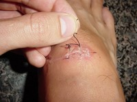
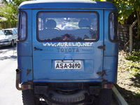
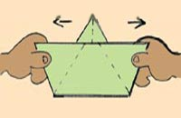
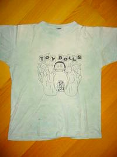
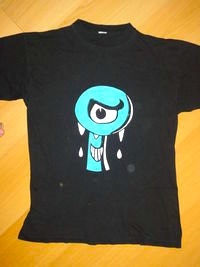
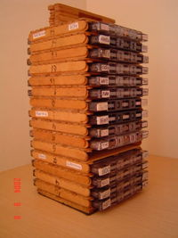
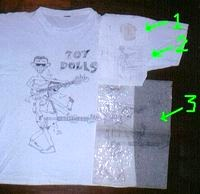

Use uma camiseta com a SUA estampa.
Cole o SEU adesivo no carro.
Pinte VOCÊ mesmo seu cabelo.
Liberte-se, faça você mesmo.
- Como pintar o cabelo com papel crepom
- Quer pintar o cabelo de vermelho igual à personagem do Rebelde (RBD)? Quer chamar atenção na festa da escola? Quer chocar a sociedade com seu moicano colorido? Papel crepom é bem barato e com um simples copo d'água você pinta o cabelo.
- Como retirar os pontos de uma ferida 
- Cortou-se, levou pontos e está com preguiça de ir ao hospital retirá-los? Faça você mesmo em casa!
- Adesivo para colar na lataria do carro (Plotter, Vinil) 
- Aprenda como fazer um adesivo bonitão para colar na lataria do seu carro, pode ser um desenho, uma frase ou o endereço de um site.
- Como fazer um barquinho de papel 
- Aprenda (ou relembre) como fazer seu barquinho. Tem passo-a-passo com desenhos e até um vídeo para aqueles realmente apressadinhos.
- Como pintar camiseta com CANETA para tecido 
- Fazer sua própria estampa em uma camiseta é muito fácil, basta desenhar com a caneta! É uma caneta especial, comprada em qualquer papelaria e custa baratinho. Pode lavar à vontade que não sai.
- Como pintar camiseta com TINTA para tecido 
- Para fazer estampas com aparência mais profissional que as do item anterior, use a tinta para tecido, que é como se fosse uma "tinta guache" que não sai quando lava. Fica show!
- Porta-fitas cassete (k7) feito com palitos de sorvete 
- Seja para organizar sua coleção de antigas fitas cassete (k7), seja para relaxar ou passar um tempo de qualidade com seu filho, brinque de colar palitos de sorvete.
- Como fazer etiquetas para fitas cassete (k7)
- Tá, eu sei que as fitas cassete já estão virando item de museu, mas ainda há pessoas que as utilizam, então fica a dica. Nas etiquetas vão os nomes das músicas, da banda e do disco. Bem prático!
- Desenho matriz para pintar na camiseta 
- Usado tanto na pintura da estampa com caneta e com tinta (veja itens seguintes), fazer o molde para a arte da camiseta é o primeiro passo.
Textos de E-mail
- 20 conselhos das Universidades de Medicina
- 21 dicas de Lótus para ser feliz
- A Fábula do Porco-espinho
- A Parábola Chinesa da Sogra Ruim
- A parábola do cientista e da criança: Como Consertar o Mundo
- A vida de um bilionário: entrevista com Warren Buffett
- Abelhas São Imutáveis e Eternas
- Benefícios do Pepino
- ESTRATÉGIAS MENTAIS: de dentro pra fora (e vice-versa)
- Lei do Caminhão de Lixo
- O Círculo do Ódio
- O Código de Ética dos Índios Norte-Americanos
- O jeito certo de comer frutas
- O segredo da medicina oriental: metade, dobro, triplo
- Pilates para o Cérebro
- Relação dos alimentos com as emoções
- Sempre embrulhe os chicletes antes de jogar fora
- Suco de salsa remove pedras nos rins, tratamento natural
- Um Homem Inteligente Falando das Mulheres
Especial Mulher
- ★ 20 alimentos anti-CELULITE
- A maioria das mulheres sofre com a indesejável presença da celulite. As causas podem ser várias, desde genéticas até hormonais. Mas, os indesejáveis furinhos nas pernas, bumbum e barriga, podem ser evitados e até eliminados com a adoção de uma dieta que contemple alimentos anti-celulite. Veja só a lista: (leia mais...)
- ★ Acessórios FOLK e artesanais para usar no inverno 2010
- A moda artesanal apareceu nos desfiles para o inverno 2010, com o nome mais chique dela: moda folk. A moda folk é aquela com ar étnico, meio hippie, artesanal, que não segue tendências e a moda. O toque artesanal no inverno 2010 virá nas roupas, com muitos vestidos e saias com estampas florais e coloridas. E virá forte em acessórios, que mesclam materiais, e aplicações. Se você gosta desse estilo, saiba alguns acessórios artesanais que estarão com tudo no inverno 2010: (leia mais...)
- ★ Animal Print na moda inverno 2011
- O inverno 2011 está cheio de tendências bem femininas: rendas, saias rodadas, paetês, nude e transparências. Mas, o que mais chama a atenção são as estampas. E a estampa que mais apareça no inverno 2011 será a oncinha (ou animal print, como chamam). Veremos oncinha nos mais diversos acessórios e roupas, veja só: (leia mais...)
- ★ Biquíni de oncinha na moda verão 2011
- A estampa de oncinha antigamente agradava poucas mulheres, e geralmente só as mais velhas gostavam. Hoje, virou tendência e queridinha de muitas mulheres, das mais fashion às básicas. As brasileiras são loucas por tudo que tenha estampa de oncinha, e os biquínis serão a grande sensação do verão 2011. Se você sonha com um modelo de oncinha, veja só as dicas: (leia mais...)
- ★ Biquínis da moda verão 2011
- Toda brasileira adora um biquíni novo, não é mesmo? Mas também, com tantos modelos lindos e bem feitos que temos a disposição em nosso país, não há como resistir. Se você pretende comprar um biquíni nessa estação, veja só quais os modelos, estilos e estampas que serão tendência, e escolha o biquíni que combina mais com você: (leia mais...)
- ★ BOHO CHIC - Como se vestir no estilo Bohemian Look Chic
- O estilo Boho Chic é uma mistura de tendências e estilos diversos: folk, hippie, étnico, hippie chic, country, vintage... É aquele look de brechó, onde vestidões, batas, colares longos, muito crochê, couro, camurça e tricô andam juntos e misturados. É um estilo que é independente da moda, e combina com mulheres que gostam do ar natural e descontraído de brechós e da mistura de roupas simples com outras mais ornamentadas criando um look único e só seu. Se você é assim, veja como entrar nesse estilo: (leia mais...)
- ★ Bolsa CLUTCH - Como usar
- A bolsa clutch é uma elegante carteira de mão, que na maioria das vezes é apresentada como um acessório para ser usado à noite, em festas e eventos mais chiques. Mas, hoje a moda a transformou em um acessório super moderno, delicado e fashion, e a clutch pode ser usada durante o dia, nas mais diversas ocasiões. Basta ter estilo e combiná-la com o restante da sua roupa. Se você tem dúvidas de como usar sua bolsa clutch, veja só algumas dicas bem legais: (leia mais...)
- ★ Bota de cadarço (Lace-Up Boots) na moda inverno 2011
- As botinhas com cadarço, também chamadas de lace up boots, serão a sensação e tendência absoluta do inverno 2011. Depois do inverno passado, onde os saltos estavam baixos, com predominância das botas montaria ou das ankle boots de saltos não tão altos, a vez agora é das laced up boots com saltos altos e altíssimo. Se você já tem a sua, veja só algumas dicas de como usar e combinar a sua botinha de cadarço com seus looks: (leia mais...)
- ★ Bota Montaria: como usar
- As botas montaria são também conhecidas como riding boots ou equestrian boots. São botas mega confortáveis e excelentes para usar no dia-a-dia. O que mais podemos querer do que uma bota bem quentinha até o joelho, e sem salto? É conforto puro neste inverno! A bota montaria tem um cano sempre muito bonito, bem longo, e um salto minúsculo (que nem dá para chamar de salto...). É perfeita para as mulheres altas que não usam salto, ou para as baixinhas que querem conforto. É uma bota super simples, mas que pode ser incrementada com algumas dicas: (leia mais...)
- ★ BOTAS COUNTRY - Como usar essa tendência e ficar na moda
- A bota country já existem há muito tempo em algumas lojas do Brasil. Mas só nos últimos dois anos é que ela veio com tudo para a moda brasileira, e agora está em todas as vitrines, e nos mais variados estilos e cores. Mas, por ser um acessório bem diferente e caricato, as botas country devem ser usadas com cuidado. Senão, corre-se o risco de ficar com cara de cowgirl demais! Para não errar, veja como combinar e usar esse acessório lindo: (leia mais...)
- ★ Botas Polainas: como usar as FOLD-OVER BOOTS
- As botas polainas são mais uma tendência dos anos 80 que volta com tudo! São botas que o cano é dobrado pra fora, é desce até o tornozelo ou quase o chão, formando uma polaina com a própria bota. Podem ser de cano bem alto ou cano curto, mas as mais encontradas são de cano mais curto. São botas bem estilosas, e se você gosta de itens bem fashion e tendências, saiba como combiná-las: (leia mais...)
- ★ BOTAS: Tendências da moda inverno 2010
- Por mais que o Brasil seja um país de clima tropical, é unânime que a moda de usar botas no inverno pegou em todo o Brasil, e as mulheres usam e abusam desse calçado. Mas, não é a toa. Toda mulher fica linda, bem vestida e atraente quando usa uma bota bonita no inverno. Para não ficar de fora, veja quais serão as tendências para as botas, neste inverno 2010: (leia mais...)
- ★ CELULITE - O que não comer
- A celulite é um problema que incomoda a maioria das mulheres. Mas, muitas vezes ignoramos soluções simples para este problema, como por exemplo, o cuidado com a alimentação. Pois existem alimentos que são fontes potenciais de gordura causadora da celulite. Confira: (leia mais...)
- ★ Cinto com nó - Como usar
- O que antes era sinônimo de desleixo e remendo de última hora, agora virou ícone totalmente fashion e visto em diversos desfiles e na cintura de diversas celebridades: usar o cinto com um nó. É aquele pedaço de cinto que sobrou, que não tem fivela ou passante, ou que simplesmente você comprou muito grande e não tem buraquinhos suficientes. Agora é chique usar cinto com nó. Mas, se você tem dúvidas de como usar esse estilo tão diferente, veja só algumas dicas de como usar o cinto com nó: (leia mais...)
- ★ Como clarear os pelos em casa (banho de lua)
- Quem não gosta dos pelos escuros, pode usar a técnica do clareamento caseiro e ficar com os pelos clarinhos e loiros em apenas 20 minutos! Basta misturar água oxigenada e pó clareador. O clareamento caseiro tornou-se chique nos últimos anos, e as clínicas de estética e os salões de beleza passaram a chamar esse procedimento tão comum para as mulheres brasileiras de “banho de lua”. (leia mais...)
- ★ Como usar CLOGS
- O tamanco glog é um um tamanco que vai e volta na moda, e nesta estação surgiu como tendência absoluta, tanto para o inverno quanto para o verão. É chamado também de tamanco holandês ou babuche. É um tamanco de madeira, de solado pesado e peito do pé todo fechado em couro, tecido ou camurça. Normalmente nas laterais do tamanco há tachas que pregam o tecido ao solado de madeira. É um tamanco que agrada alguns e desagrada muitos, por causa do seu estilo diferente e bem étnico. Se combina com o seu estilo, veja como usar esse calçado: (leia mais...)
- ★ COLOR BLOCK: como usar
- A definição de color block é algo como "bloco de cor". Na moda, o color block (ou color blocking) nada mais é do que usar cores nas roupas e acessórios, usando cores muito contrastantes ou não, mas que sejam sempre chamativas! É uma moda que revive os anos 80, que traz de volta um pouco do exagero e do que era brega até bem pouco tempo atrás. No color block o legal é não combinar, é usar muitas cores fortes. Tudo junto e misturado! Ainda na dúvida? Veja algumas opções de como usar o color block no seu dia a dia: (leia mais...)
- ★ Como afinar a cintura e secar a barriga
- Seja no inverno ou no verão, o que toda mulher quer é ficar com a barriga bem chapada e sem aqueles pneuzinhos chatos, que insistem em se acumular na cintura e na barriga. Fácil de perder esses quilinhos extras, nunca é, pois exige tempo, dedicação e esforço. Mas com algumas dicas de alimentação, exercícios e truques, veja só como afinar a sua cintura e afinar a barriga: (leia mais...)
- ★ Como baixinhas devem usar saia longa
- A moda sempre ditou que as baixinhas não podiam usar ou deviam tomar muito cuidado com as saias longas. Mas, com o tempo percebeu-se que com apenas alguns truques simples de moda e estilo, toda mulher pode usar a saia longa, e ficar na moda, linda e super estilosa. Veja só o que fazer se você é baixinha e quer usar saia longa: (leia mais...)
- ★ Como cuidar e conservar calçados de CAMURÇA e NOBUCK
- Ao comprar um calçado de camurça ou nobuck, você deve tomar alguns cuidados para mantê-lo bonito e sem estragos, pois ele é um couro extremamente delicado e fácil de estragar. Veja só as dicas que conservam seu sapato de camurça ou nobuck deixando-o sempre com aparência de novo: (leia mais...)
- ★ Como escolher a bolsa certa e adequada ao visual
- As bolsas sempre foram o maior sonho de consumo da maioria das mulheres. Mas não é a toa: carregamos nossa vida dentro delas, diariamente. Seja no trabalho, na escola, na faculdade, no passeio, ou numa festa. Além disso, hoje existem os mais diversos modelos, tamanhos e cores para escolhermos. E o melhor: temos opções baratas e diferenciadas. Veja algumas dicas importantes sobre as bolsas: (leia mais...)
- ★ Como evitar manchas nas axilas
- O processo de depilação, seja com qual método for, com o tempo costuma deixar uma indesejável cor escura nas axilas. É uma coisa muito chata isso, não é mesmo? As lâminas são as principais vilãs desse processo, pois vão tirando a camada protetora da pele com o tempo, e deixam a pele mais sensível e suscetível a manchas. Mas, existem algumas dicas que podem ser seguidas, que ajudam a evitar este problema. Siga-as, e evite as manchas chatas e incômodas nas suas axilas: (leia mais...)
- ★ Como fazer a trança embutida
- Em praticamente todos os desfiles de moda do verão 2010/2011, as tranças apareceram como tendência absoluta de moda para os cabelos. E sem dúvida nenhuma, são lindas, pois combinam perfeitamente com o ar romântico e étnico que o verão 2011 promete. Se você tem dúvidas de como fazer a sua trança embutida e usá-la, veja só as dicas: (leia mais...)
- ★ Como fazer a trança espinha de peixe
- As tranças chegaram com tudo na moda deste verão. Embutidas, de lado, soltas, no estilo espinha ou escama de peixe... Todas são lindas e combinam com o ar despojado e feminino do verão. Se você não sabe como fazer a trança espinha de peixe, veja só a dica de como fazer e usar sua trança: (leia mais...)
- ★ Como fazer o esmalte durar mais tempo na unha
- Não existe nada mais chato do que gastar dinheiro na manicure, ou aquele tempão em casa, para logo o esmalte ficar todo descascado. Mas, fazer ele durar mais na unha (até duas semanas!) não é impossível. Para isso acontecer, veja só as dicas, que você conseguirá ficar com as unhas lindonas por mais tempo, com certeza: (leia mais...)
- ★ Como fazer OMBRÉ HAIR
- O ombré hair virou sensação entre as celebridades internacionais, e virou moda no Brasil também! O cabelo com cara de queimado naturalmente no sol desembarcou no verão brasileiro com tudo. Agora, nos salões só se fala e só se pede isso! A palavra ombré vem do francês e significa sombreado. Veja aqui mais sobre a mechas ombré hair, também conhecidas como mechas texanas, e saiba até como fazer a sua ombré hair com perfeição: (leia mais...)
- ★ Como fazer penteado MOICANO em casa
- O penteado moicano sem dúvida nenhuma é o mais pedido em todos os salões do Brasil, e virou moda. Mas, com alguns treinos, fica bem fácil você fazer em casa, sem precisar ir até o salão, sem gastar nada e ainda deixando o cabelo do jeito que você mais gosta. A dica é treinar em casa dias antes do evento que você queira ir. Assim, você pega a prática e vai se conhecendo melhor. Siga o passo a passo e fique linda na sua festa: (leia mais...)
- ★ Como fazer unha MEIA LUA (francesinha invertida)
- A unha meia lua ou francesinha invertida é a marca registrada dos anos 20, da mulher que se libertou dos padrões vigentes na época e tornou-se mais moderna. Hoje, a unha meia lua é sinônimo de moda vintage e retrô. A internacional diva burlesca e pin up Dita Von Teese é vista há muitos anos usando a unha meia lua, e no Brasil a novela Passione tornou a unha da personagem Melina febre nos salões de beleza e manicures. Mas fazer a unha meia lua em casa é super fácil. Veja só as dicas e faça você mesmo: (leia mais...)
- ★ Como ficar com a barriga sarada para o verão
- Com a proximidade do verão, é aquela correria para perder os quilinhos a mais que todo mundo ganha com o frio do inverno. Para estar com tudo no verão, e entrar naquele biquíni com a barriga bem sarada e chapada, não existe milagre de um dia para outro. Mas com algumas dicas bem fáceis de seguir e um esforcinho, você consegue! Veja só quais as dicas para ficar com a barriga bem magrinha e sarada para o verão: (leia mais...)
- ★ Como limpar camurça
- A camurça é um tipo de couro lindo, mas super chatinho de sujar, pois é extremamente permeável e sensível. Manchas de água e sujeira aderem facilmente à ela, e os calçados costumam ficar feios em pouco tempo. Para isso não ocorrer, você pode usar o impermeabilizante antes do primeiro uso. Mas, se ocorrer depois, você pode usar as dicas seguintes para tirar as manchas. Espero que dê certo e você consiga "salvar" o seu sapato, cinto ou bolsa! (leia mais...)
- ★ Como limpar e conservar calçados de couro
- Um calçado de couro legítimo, seja uma bota, um sapato ou uma sandália, merece cuidados especiais para durarem muito tempo. Um bota de couro bem cuidada pode durar anos, e passar inclusive para outra geração. Os cuidados certos na limpeza e armazenamento dos calçados em armários e sapateiras são seus principais aliados. Se você não sabe como limpar e conservar seus calçados de couro, veja só algumas dicas bem úteis: (leia mais...)
- ★ Como limpar jóias em prata
- As jóias em prata merecem receber um cuidado especial, pois são metais nobres que quando limpos e bem cuidados, possuem um brilho muito bonito. Mas, quando sujos ficam escuros, sem brilho e com a aparência de oxidados. Se você não sabe como limpar as suas pratas, veja só as dicas de limpeza e conservação: (leia mais...)
- ★ Como limpar sua jaqueta de couro
- Comprar uma jaqueta de couro legítimo é um investimento para toda a vida. Quando a peça é bem cuidada, permanece como nova por muitos e muitos anos, e o melhor de tudo é que é um item atemporal, que nunca sairá de moda. Mas, para cuidar bem da sua jaqueta de couro, alguns cuidados simples são essenciais. Se você não sabe quais são, leia só algumas dicas bem interessantes e fáceis de fazer para deixar sua jaqueta de couro limpa e bem cuidada: (leia mais...)
- ★ Como modelar a cintura e ficar mais magra
- Toda mulher deseja uma cintura fininha, bem marcada e sedutora. Mas, todas sabemos que esse processo não é assim tão fácil. Emagrecer sempre é difícil, e mesmo assim muitas vezes a cintura ainda não fica fina. Mas, existem algumas dicas e truques que ajudam a modelar a cintura, veja só como fazer isso e abusar de vestidos, cintos e biquínis: (leia mais...)
- ★ Como perder peso saudavelmente
- Emagrecer é o desejo de 9 entre 10 mulheres, não é mesmo? Nunca estamos satisfeitas com o corpo que temos, e sempre queremos mudar alguma coisa, por mais linda e perfeita que estivermos. Mas, loucuras e dietas radicais não são indicadas para quem quer perder peso e ficar saudável ao mesmo tempo. Por isso, siga abaixo algumas dicas bem legais para manter um peso saudável, e emagreça bem e com a saúde em dia: (leia mais...)
- ★ Como tirar chiclete grudado na roupa
- Quando nos deparamos com um chiclete grudado na nossa roupa, dois tipos de raiva surgem: raiva pelo chiclete em si, e raiva pela pessoa porquinha que jogou o chiclete em qualquer lugar, menos no lixo, não é mesmo? Mas, deixando a raiva de lado, temos que desgrudar o chiclete da roupa e puxá-lo definitivamente não é o melhor jeito. Além da lambança e sujeira, este método pode danificar sua roupa. Para remover o chiclete da roupa sem estragá-la, e como num passe de mágica, use esta dica super simples: (leia mais...)
- ★ Como tirar mancha de batom
- Independentemente da situação em que foi feita, mancha de batom sempre é um problema e uma dor de cabeça na hora de lavar a roupa. A mancha quando lavada da maneira comum costuma não sair de jeito nenhum, e muitas vezes perdemos a roupa por isso. Mas, se você souber dos truques abaixo, terá sua roupa novinha em folha novamente, pois é bem simples remover manchas de batom, veja só: (leia mais...)
- ★ Como tirar mancha de café
- Tomar café é um ritual sagrado e gostoso, mas parece que deixar cair café na roupa, ou na toalha da mesa é algo que acontece com muita frequência, não é mesmo? Lembre-se que para tirar a mancha do café é ideal lavar sempre na hora, não pode ter preguiça e deixar a mancha secar! Mas, mesmo com manchas mais difíceis de tirar, existe uma dica infalível e super simples para tirar mancha de café do tecido, veja só: (leia mais...)
- ★ Como tirar mancha de caneta da roupa
- Não existe nada mais chato do que perceber que aquela roupa que você tanta gostava está com uma mancha bem chata, não é mesmo? Principalmente se a mancha for de caneta esferográfica, que é sempre super difícil de tirar. Mas, existem dois truques que se forem feitos com cuidado, e pouco tempo depois da mancha ser feita, costumam resolver o problema. Tente os dois, se um só não der certo: (leia mais...)
- ★ Como tirar mancha de molho shoyu
- Na maioria das vezes estamos felizes, seja em casa ou no restaurante, comendo uma bela comida japonesa, e de repente o shoyu teima em cair na roupa. Na hora você já fica desesperado, porque molho shoyu realmente é muito difícil de tirar. Mas, se você usar este truque na hora, sua mancha sairá como mágica: (leia mais...)
- ★ Como tirar mancha de óleo ou azeite da roupa
- Todo mundo tem seu dia de desastrado, e acaba derrubando óleo ou azeite na roupa, seja em casa ou no restaurante. E mancha de óleo costuma ser muito difícil para remover, principalmente se não for retirada logo depois de feita. Mas, existe uma dica super simples e infalível para retirar manchas de azeite ou óleos, tanto da roupa quanto de toalhas, veja só: (leia mais...)
- ★ Como tirar mancha de sangue
- Para remover manchas de sangue de roupas, lençóis ou outros tecidos, há duas dicas super simples, e que são infalíveis para remover as manchas, mesmo as mais difíceis. É só ter um pouco de paciência, fazer com bastante cuidado, e ir esfregando. Veja só: (leia mais...)
- ★ Como tirar mancha de vinho branco da roupa
- Roupas manchadas com bebida é sempre muito chato: você fica molhada, com a roupa melecada, e se não lavar em pouco tempo, poderá perder a sua roupa. Por isso, é importante saber o que fazer para tirar rapidamente a mancha de vinho da sua roupa. Mas, não se preocupe, a dica é super simples e fácil de fazer, veja só: (leia mais...)
- ★ Como tirar mancha de vinho tinto
- Manchar a roupa ou as toalhas de casa com vinho tinto sempre é muito chato. Se estamos em algum evento ou festa costumamos ficar bravos e com vergonha, mas se estamos em casa corremos para o tanque, mas muitas vezes não sabemos o que fazer. Mas, tirar mancha de vinho tinto é mais fácil do que falam por aí. É só usar os produtos certos, e não lavar só com água e sabão como muitos fazem. Isso só espalha a mancha ainda mais! Para tirar a mancha de vinho tinto, antes de mais nada siga estas dicas: (leia mais...)
- ★ Como tirar manchas amareladas de mofo
- Roupa guardada há muito tempo sempre é um problema: além do cheiro de guardado e mofo, às vezes costumamos ter a infeliz surpresa da roupa estar toda amarelada, manchada de mofo. Mas, com uma dica super simples você pode salvar sua roupa, veja só: (leia mais...)
- ★ Como tirar manchas do tênis All Star branco
- Usar All Star branco é uma atitude fashion que nunca sairá de moda. Há muitas décadas, este modelo de tênis é símbolo de estilo aliado à praticidade, e o modelo branco, além disso, é sempre clássico e atemporal. Mas, mantê-lo sempre branco e com aparência quase nova é muito difícil. As manchas costumam aparecer com enorme facilidade, não é mesmo? Mas, existem meios de deixar seu tênis All Star branco sempre branquinho! Veja só nossa dica incrível com o uso de Maizena (Amido de Milho): (leia mais...)
- ★ Como usar as SWEATPANTS (calças de moletom fashion!)
- Aquelas calças típicas de academia de antigamente, de jogging e de escola, estão virando febre fashion! Nada mais são dos que as nossas conhecidas calças de moletom! Elas aparecem nas passarelas em modelos um pouco mais sequinhos, mas continuam com os tradicionais bolsos laterais e o punho elástico no tornozelo. Se você gosta de ser antenada na moda e antecipar tendências, resgate a sua e veja como usá-la: (leia mais...)
- ★ Como usar BLUSAS CROPPED (cropped shirt)
- As cropped shirt da moda são as blusas mais curtas, que deixam a barriguinha de fora, e muitas vezes até a parte mais superior da barriga (que chamamos de estômago) à mostra. Ultimamente as blusas cropped apareceram em todas as passarelas de moda, e estão começando a ganhar as vitrines e ruas. Para não fazer feio com o seu look por aí ou com o risco de ficar vulgar, algumas dicas de como usar as cropped shirts são bem importantes: (leia mais...)
- ★ Como usar bolsa de festa (bolsa social)
- A bolsa de festa é um dos itens necessários e imprescindíveis para o look social, seja num casamento, numa formatura ou num evento chique, pois deixa a mulher ainda mais linda e sofisticada. Mas, na hora da escolha desse acessório, é importantíssimo o bom senso, e saber combinar muito bem com o restante da roupa e acessórios. Para não haver erro, veja como escolher e usar a sua bolsa de festa/bolsa social: (leia mais...)
- ★ Como usar bota country cano curto (ANKLE COWBOY BOOTS)
- As botas country chegaram com tudo ao Brasil, e estão até em novas versões: cano curto, coloridas, com detalhes, etc. As ankle cowboy boots são as botas country de cano curto, bem no estilo cowboy urbano! Ficam lindas em diversos looks, e são perfeitas para o calor do Brasil. Veja algumas dicas de como usar e combinar sua botinha: (leia mais...)
- ★ Como usar bota de cano baixo
- Até bem pouco tempo atrás, usar bota de cano curto com saia era um pecado fashion. Hoje em dia (ainda bem!) a moda anda menos rígida, com menos padrões chatos e limitadores. O ideal é sempre você usar o que combina com o seu corpo e estilo, o que lhe cai bem, valoriza, e o que faz você se sentir bem. As botas de cano baixo hoje podem ser usadas das mais diversas formas, com vários tipos de roupa. Para ter algumas idéias de como usar a bota de cano baixo, veja só algumas dicas bem legais: (leia mais...)
- ★ Como usar BOTAS UGG
- A bota Ugg é uma bota de marca australiana que chegou com tudo nos Estados Unidos e virou febre entre as famosas de lá. Ela é uma bota bem larguinha, de cano médio a alto, e o diferencial está no seu bico que é bem redondo e grandão, e o seu forro, que é de lã e pelinhos. É uma bota ideal para a neve, chuva e dias bem frios, pois esquenta mesmo. Ela não é uma bota com uma estética muito bonita, pois no pé às vezes parece um pão de forma, mas é uma bota que deve ser usada pelo seu conforto e por deixar os pés das mulheres sempre bem quentinhos. Para não ter erro na hora de combiná-la, veja só algumas dicas: (leia mais...)
- ★ Como usar cachecol
- Um acessório que nunca sai de moda e que é sempre bem vindo, sem dúvida nenhuma é o cachecol. Além de embelezar o visual e qualquer roupa, ele sempre deixa o pescoço quentinho e nos protege do frio. Se você não sabe muito bem como usar o seu cachecol, veja só algumas dicas de como combinar e usar o seu cachecol no frio: (leia mais...)
- ★ Como usar calça BOCA-DE-SINO
- As calças boca-de-sino ressurgem dos anos 70 diretamente para este inverno com tudo, e com muito estilo! A calça boca-de-sino é aquela que é totalmente justa no quadril e nas coxas, e abre uma barra bem larga a partir do joelho. É um modelo de calça que deixa o corpo bem feminino e o visual super chique. Se você tem dúvidas de como usar, como combinar e se seu corpo combina com ela, veja só algumas dicas bem bacanas: (leia mais...)
- ★ Como usar calça LEGGING
- As calças legging chegaram há algumas temporadas, e prometem não deixar a moda das brasileiras tão cedo. Foram adotadas no dia a dia como substitutas das calças jeans, e são perfeitas para isso, pois são muito confortáveis e versáteis na hora de montarmos um look. Mas, para não ficar feio ou vulgar, alguns toques de moda e estilo são bem importantes na hora de usar sua calça legging: (leia mais...)
- ★ Como usar a calça WET LEGGING
- As wet leggings são as leggings com aparência de molhadas, parecendo uma espécie de couro molhado. São peças de tecido, super confortáveis e podem ser usadas tanto no verão quanto no inverno. Atualmente, são super tendência e podem ser usadas nos mais diversos looks. Se você tem dúvidas de como usar e combinar sua wet legging, veja algumas dicas bem legais: (leia mais...)
- ★ Como usar CALÇAS FUSEAU (FUSÔ)
- As calças fuseau (pronuncia-se fusô) voltaram com tudo a moda. Depois do sucesso absoluto nos anos 80, ela ressurgiram no inverno e com certeza se manterão no verão também. Se você não sabe como usar essa peça, combine com o seu estilo e monte diversos looks, veja as dicas: (leia mais...)
- ★ Como usar calças PANTALONAS
- As calças pantalonas são eternas e nunca saem de moda. São aquelas calças com a boca larga e modelagem mais soltinha, mas, que, diferentemente das calças boca-de-sino, começam largas desde a coxa, dando um visual bem clássico e chique para quem usa. Por isso, usar as pantalonas em ambientes formais é sempre uma boa pedida, pois elas dão um ar sofisticado e sério à produção. Mas, se você tem dúvidas de como usar a pantalona, veja só algumas dicas bem legais: (leia mais...)
- ★ Como usar CARDIGÃ
- O cardigã é aquele modelinho de casaco que sempre vimos nossas vós e mães usando e não tínhamos muito interesse, mas que de uns tempos para cá a moda pegou como um item fashion e super usável nas mais diversas ocasiões. Que ele é uma peça atemporal, isso não resta dúvidas. Mas, se você tem dúvidas de como usar o cardigan, como combinar, veja só algumas dicas bem bacanas: (leia mais...)
- ★ Como usar colete jeans
- O colete jeans é uma peça linda e atemporal, sempre está na moda! Mas, se não for muito bem combinado, por detonar qualquer produção. Isso porque ele é uma peça básica, mas muito caricata, muito única. Ele é o chamariz de qualquer produção, ele sempre torna-se o destaque. Quando bem usado, fica lindo e bem moderno. Se você tem dúvidas de como usá-lo, veja algumas dicas e arrase nas produções: (leia mais...)
- ★ Como usar COTURNO COM LEGGING
- Usar bota coturno com calça legging é o máximo do conforto, estilo e atitude. É um look clássico, que pode ser usado nos dias mais quentes, e, principalmente, nos dias mais frios: é só escolher a parte de cima mais adequada ao clima. Se você tem dúvidas de quais combinações fazer, e como usar, veja só algumas dicas bem bacanas: (leia mais...)
- ★ Como usar COTURNO COM SAIA
- A moda dos coturnos chegou com força total, e neste inverno é o calçado preferido de várias marcas. O coturno é um calçado de atitude, é um acessório marcante, e com ele sua produção fica quase pronta, sem precisar de muitos elementos para deixar o look bacana. Ele é um calçado muito versátil, que vai bem com qualquer look: com calças, com saias, com roupas mais alternativas, e até com roupas mais femininas. Mas, se você tem dúvida de como usar essa calçado pesado com uma saia, que é um item ultra feminino, por exemplo, veja só as dicas para arrasar na produção: (leia mais...)
- ★ Como usar COTURNO COM VESTIDO
- A moda dos coturnos saiu da cena alternativa e caiu com tudo no mundinho fashion. Desde o verão, o calçado fechado mais falado sem dúvida nenhuma é o coturno. E neste inverno, ele chega com tudo em diversos looks, e quando usado com vestidos, muda totalmente de cara, ficando feminino e super fashion. Se você tem algumas dúvidas de como usar e combinar o coturno com vestidos, veja só algumas dicas bem bacanas: (leia mais...)
- ★ Como usar COTURNOS
- O coturno é a bota que representa ao máximo o movimento punk, os metaleiros e os apaixonados pelo rock pesado. Junto com jaquetas de couro, as tachas e spikes, representa o visual básico desses grupos e os caracteriza perante à sociedade. Paralelamente à filosofia destes grupos, já há algumas estações, e, principalmente neste inverno, a moda feminina apropriou-se destes elementos para criar no mundinho fashion o contraponto com a feminilidade das roupas invernais, e o coturno é o calçado símbolo do inverno 2011. Se você nunca usou esta bota, e agora está louca para entrar nessa moda, veja só algumas dicas de como usar o coturno em produções bem femininas e com o pé nas tendências da moda inverno: (leia mais...)
- ★ Como usar crocs
- Os sapatos e sandálias Crocs dominaram o Brasil inteiro. Originais ou genéricos, fizeram a cabeça e os pés de homens, mulheres e crianças. E não existe meio termo, ou você odeia, ou você ama esse calçado. Mas quem já usou uma vez sabe que o conforto e a maciez dele são inegáveis. Como são calçados bem chamativos, usa-los de maneira fashion sempre é difícil. Então, veja só algumas dicas de como combiná-los e usar seu Crocs sem ficar feio: (leia mais...)
- ★ Como usar ESTAMPA DE ONCINHA
- Toda mulher adora uma estampa de oncinha, não é mesmo? E já foi o tempo que estampa de oncinha era considerado brega e cafona. Leopard print (ou Animal print) agora é tendência, e promete ser a sensação por muitas e muitas estações ainda. Mas, mais do que uma moda passageira, a estampa de oncinha é clássica e pode ser usada pelas mais diversas mulheres e estilos. Veja só algumas dicas: (leia mais...)
- ★ Como usar HOT PANTS
- As hot pants não são calças, mas sim um short bem curtinho e de cintura altíssima, com um ar bem retrô. Eles parecem aquelas calcinhas antigas de vovó, e apareceram com tudo nos desfiles de verão, usados com tops na mesma estampa, formando um conjuntinho como se fosse um biquíni com padronagens maiores. Se você tem dúvidas de como usar esse modelo usado de roupa, veja só algumas dicas: (leia mais...)
- ★ Como usar jaqueta modelo aviador
- A jaqueta modelo aviador é aquela jaqueta de couro (sintético ou natural) um pouco mais ampla, com zíper, e uma grande gola forrada de lã de carneiro ou pelúcia. É uma jaqueta perfeita para o inverno e para regiões de baixas temperaturas, pois ela esquenta pra valer, pois normalmente também é toda forrada com lã por dentro. É um modelo perfeito para as meninas do Sul e Sudeste do Brasil terem em seus guarda-roupas, ou para quem tem viagem marcada para países frios. Mas, se você tem dúvidas de como usar essa tendência neste inverno, veja só algumas dicas bem bacanas: (leia mais...)
- ★ Como usar Kitten Heels
- Os Kitten Hells (chamados de "sapatos de gatinhas") nada mais são do que sapatos com saltinho pequeno, no máximo um salto médio de 6 cm. Foram criados nos anos 50, para que as adolescentes e debutantes pudessem dar início aos saltos altos, aprendendo assim a andar em cima de um saltinho. Mas, a partir da década de 60 foram rapidamente incorporados pelas mulheres trabalhadoras, ou donas de casa e mães, que não podiam viver em cima de um salto alto durante o dia. Hoje, são frequentemente vistos em mulheres muito altas, como a modelo e primeira dama da França Carla Bruni, e a primeira dama dos EUA, Michelle Obama, que ajudaram a dar um status de elegância e formalidade aos Kitten Hells. Então, se você é alta e não gosta de saltos altíssimos, ou, se é uma pessoa que corre o dia inteiro e fica muito em pé no seu trabalho, eles são uma bela opção: pois são confortáveis, formais e chiques. Se tem dúvidas de como usá-los, veja só algumas dicas bem interessantes: (leia mais...)
- ★ Como usar LACE UP BOOTS
- Que a moda vem e vai, isso todo mundo sabe e já percebeu. Com os calçados acontece a mesma coisa: é só dar uns anos que aquele seu calçado aposentado volta como grande tendência da moda. Com as botas lace up boots, não foi diferente: as botas com cadarço e de amarrar estão com tudo nesta estação. Veja só algumas dicas bem legais de como usar a sua: (leia mais...)
- ★ Como usar lenços no pescoço
- Toda mulher deveria ter alguns lenços, echarpes e scarfs no seu guarda-roupa, pois estes acessórios tão simples conseguem dar vida nova às roupas que já estamos enjoadas, e conseguem dar cor e estilo àquele visual simples do dia a dia. Um lenço pode renovar totalmente seu visual, acredite! Mas se você tem dúvidas de como usar os lenços, veja só algumas dicas bem bacanas para a sua produção: (leia mais...)
- ★ Como usar meia soquete
- Depois do sucesso que as meias 5/8 e 7/8 fizeram entre as fashionistas, a tendência agora é usar meia soquete aparecendo. Aquelas meias bem curtinhas mesmo, de tecidos mais grossos ou fininhos como meia calça. As meias soquetes podem ser usadas com os mais diversos calçados e são a sensação dessa estação. Se você tem dúvidas de como usar a meia soquete, veja só algumas dicas de looks e combinações: (leia mais...)
- ★ Como usar o estilo VINTAGE
- Quando dizemos que algo é vintage, significa que esta peça pertence a décadas ou anos passados, e que é um item original desta época. Quando dizemos que uma peça tem o estilo vintage, significa que ela foi produzida baseada em conceitos de outras épocas. E nada está mais em alta na moda atualmente do que o estilo vintage, seja em roupas, bolsas, acessórios e até mesmo na decoração das casas. Se você gosta deste estilo, veja só como usá-lo, usando peças antigas ou compradas novas: (leia mais...)
- ★ Como usar oncinha na moda inverno 2011
- A estampa de oncinha é tendência absoluta na moda inverno 2011. Para quem é fã da estampa, opções de roupas e acessórios não faltam. Existe até uma loja virtual que vende só itens de oncinha, veja só: www.coisasdeoncinha.com.br. Mas, se você tem dúvidas de como usar a estampa de oncinha nos looks de inverno, veja só algumas dicas de moda: (leia mais...)
- ★ Como usar os Bandage Dress (vestidos)
- O bandage dress é um vestido super colado ao corpo, feito de faixas de tecido com lycra e elastano. Ele fica grudado ao corpo como se fossem bandagens, ataduras mesmo. Nos últimos tempos, este modelo de vestido fez a cabeça das celebridades, e com certeza vai pegar no Brasil também. É um vestido que deve ser usado com cuidado, senão pode ficar vulgar. Mas, a verdade é que no corpo da brasileira fica lindo! Então, leia algumas dicas de como usar os bandage dress: (leia mais...)
- ★ Como usar over-the-knee boot (botas cuissardes)
- Over-the-knee boot ou botas cuissardes nada mais são do que aquelas botas que nós brasileiras conhecemos tão bem: aquelas botas que vão acima do joelho, tipo uma meia 7/8, como as botas que as apresentadoras de programa infantis usavam a uns anos atrás. Lembrou? E quem não se lembra de Julia Roberts no filme “Uma linda mulher”? Então... Neste inverno em toda vitrine e em toda revista está a over-the-knee boot, e ela é a tendência mais forte deste inverno. Mas, se você tem dúvidas de como usar este item super fashion, veja algumas dicas: (leia mais...)
- ★ Como usar paetê
- Existem peças que são clássicos da moda, e que sempre são uma boa compra: as roupas com paetês são esse caso. Um casaco, uma blusinha básica, uma sapatilha, uma bolsa ou um mega vestido de festa, sempre caem bem e nunca saem de moda. O único cuidado que você deve ter é sempre combiná-los muito bem, pois a roupa de paetê chama a atenção por si só. Para não ter erro, veja então algumas dicas de como usar paetê: (leia mais...)
- ★ Como usar POWER SHOULDERS (ombros estruturados)
- A moda dos ombros estruturados, em roupas com ombreiras ou tecido armado nos ombros (chamados também de power shoulders) veio diretamente dos anos 80 para esta estação, e promete durar por mais algumas temporadas. Quando bem usados e combinados, os power shoulders dão um visual bem interessante e moderno. Veja só algumas dicas para entrar nessa moda sem fazer feio: (leia mais...)
- ★ Como usar SAIA LONGA na moda VERÃO
- Neste verão, a moda pede saias bem longas, até o pé mesmo, bem no estilo dos anos 60 e 70. As saias longas são também chamadas de máxi saias ou máxi skirts, e são perfeitas para serem usadas no Brasil, pois combinam muito bem com o clima tropical, com as cores, com nosso calor e nossa cultura. É um item que fica lindo e super feminino, mas se você tem dúvidas se pode ou não usar, ou dúvidas de como usar e combinar sua saia longa, veja só algumas dicas bem legais para entrar com tudo nessa tendência: (leia mais...)
- ★ Como usar SAIA LONGA
- A saia longa virou tendência e reina absoluta nas vitrines já há algumas estações. Ela aparece hoje nas mais diversas modelagens, cores e estampas, e aquela cara de careta ou antiquada que as pessoas teimam em dar a ela, desapareceu. Ainda bem, pois a saia longa é linda e super versátil! Você pode criar vários looks e estilos, é só mudar os complementos e acessórios. Algumas dicas de como usar a saia longa: (leia mais...)
- ★ Como usar SAIA MÍDI
- A saia mídi é a saia que não é curta, mas também não é tão comprida. O comprimento da saia mídi é um pouco acima da canela, e sua modelagem tradicional é o modelo evasê, ficando assim uma saia mais rodadinha e feminina. Mas, as versões modernas também podem ser justas, como se fosse uma saia lápis mais comprida. A saia mídi promete ser forte tendência na moda inverno 2011, mas, se você ainda tem receio ou dúvidas de como usar este modelo, veja só algumas dicas: (leia mais...)
- ★ Como usar SAIA PLISSADA
- A saia plissada (também chamada de saia plissê) é aquela saia bem rodadinha, feita de dobrinhas. As dobrinhas podem ser feitas costurando o tecido ou prensando o tecido com calor formando vincos. O efeito dela é super lindo, feminino e com um ar retrô belíssimo. Os tecidos devem ser fluidos leves, para que o efeito do plissado apareça bem. Esta saia é tendência absoluta desta estação, e você pode usá-la de diversas maneiras, veja só: (leia mais...)
- ★ Como usar SAIA TULIPA
- Seja no inverno ou no verão, a saia é o item preferido de muitas mulheres. E não é pra menos: é uma peça que deixa toda mulher mais feminina e elegante. E o modelo saia tulipa é uma modelagem que sempre está na moda, e deixa o corpo da mulher muito bonito. A saia tulipa é com a cintura um pouco alta, e com pregas que começam na cintura e diminuem quando chegam nas coxas, deixando a saia mais larguinha em cima, e justa nas coxas, perto do joelho. Assim, ela fica parecendo uma flor de tulipa mesmo. Se você tem dúvidas de como usar esse modelo diferente, veja só algumas dicas bem legais: (leia mais...)
- ★ Como usar sandália abotinada
- As sandálias abotinados são normalmente ankle boots abertas na frente para mostrar os dedinhos, ou abertas no calcanhar, ou dos lados, com muitas tiras. A moda da sandália abotinada está resistindo a muitas estações, e seja no inverno ou no verão, ela aparece em vários looks. No Brasil esta moda pegou mesmo, pois é um calçado perfeito para o nosso clima, além de ser sempre muito chique e bonito. Para não ter erro na hora de montar o seu look, veja só algumas dicas: (leia mais...)
- ★ Como usar sandália com meia
- Até bem pouco tempo atrás, usar sandália com meia era visto como cafona e coisa de novela dos anos 70 e 80. Como a moda é sempre cíclica e retornável, hoje em dia usar sandália com meia é forte tendência, e pode inclusive renovar seu visual, deixando você mais fashion e antenada com o que há de mais novo e moderno. Mas, se você ainda tem um pouco de receio dessa moda, ou não sabe direito como usar, veja só algumas dicas bem bacanas e componha seu visual bem lindo com sandália e meia: (leia mais...)
- ★ Como usar sandálias e botas wedges
- As sandálias e botas wedges são a grande aposta desta estação e são tendência por um bom tempo ainda, então, pode investir sem erro! As wedges nada mais são do que as nossas antigas anabelas, e aparecem com esse nome mais chique justamente por estarem mais ousadas, com materiais diferentes e saltos com novos formatos. A essência do conforto continua a mesma, por isso que a wedge é o calçado perfeito para o dia ou para bater perna no shopping. Se você tem dúvidas de como usar sua wedge, veja só algumas dicas bem bacanas de looks: (leia mais...)
- ★ Como usar sapato MEIA PATA
- Os sapatos meia pata possuem salto alto (normalmente altíssimo) e são chamados assim pois possuem uma plataforma na parte frontal, parecendo mesmo uma pata. A invenção desse sapato foi uma maravilha para as mulheres, pois assim o salto tão alto e desconfortável não é muito sentido, pois muito da altura já é descontada na plataforma frontal. Assim, as mulheres não abrem mão do salto altíssimo e ficam mais confortáveis. Se você não sabe como usar o sapato meia pata, veja só algumas dicas: (leia mais...)
- ★ Como usar shorts de cintura alta
- Um item que sempre é bem vindo e nunca sai de moda é o short de cintura alta. Ele deixa o corpo da mulher mais feminino e delineado, e até ajuda a disfarçar as gordurinhas do quadril e barriga. É um item fácil de combinar, e pode ser usado nas mais diversas ocasiões. Se você tem dúvidas de como usar e combinar o short de cintura alta, veja algumas dicas bem legais: (leia mais...)
- ★ Como usar tranças na moda inverno 2011
- A moda das tranças nos cabelos continua com tudo neste inverno 2011. E é ótimo, pois é um penteado super fácil e muito feminino. Deixa qualquer mulher ainda mais bonita e elegante. Para estar com tudo neste inverno, veja só os tipos de trança que mais estarão na moda: (leia mais...)
- ★ Como usar TRENCH COAT
- Os casacos trench coat são os casacões que vão até o joelho (ou um pouco abaixo deles), e que possuem botões em toda a frente, faixa para amarrar na cintura, bolso e gola. Tradicionalmente ele foi feito para os soldados britânicos da Primeira Guerra Mundial usarem para se protegerem do frio. A cor mais tradicional e clássica é o trench coat bege, com forro xadrez e tecido de algodão ou gabardine. Mas, hoje em dia, essa peça invadiu as vitrines das principais lojas do Brasil, e pode ser encontrado nas mais diversas cores e modelagens. Mas, uma coisa é certa: no frio, não há nada que deixe uma mulher mais chique que um belo trench coat. Se você tem dúvidas de como usar o modelo, veja só algumas dicas bem legais: (leia mais...)
- ★ Como usar vestido com cinto
- O vestido é um item indispensável no guarda roupa de toda mulher. Deixa a mulher elegante, feminina, e dependendo do modelo deixa até mais magra, pois alonga a silhueta e disfarça as gordurinhas. Usar o vestido com cinto é ainda mais elegante e feminino, e pode ser usado nas mais diversas ocasiões. Veja só algumas dicas de como usar o cinto com vestido e arrasar: (leia mais...)
- ★ Como usar VESTIDO LONGO
- Usar vestido longo durante o dia será a tendência forte deste verão. Liso ou estampado, não importa, todos serão bem vindos! A tendência deste verão pede vestidos bem românticos e esvoaçantes, que poderão ser usados durante o dia para passear e para trabalhar, ou mesmo à noite para a balada. Se você tem dúvidas de com quais acessórios usar e como combinar seu vestido longo, veja só algumas dicas bem legais: (leia mais...)
- ★ Crochê é tendência no verão 2010-2011
- Peças de roupas com crochê sempre voltam à moda. São um clássico muito bonito, e quando bem feitas e bem combinadas, deixam o look incrível. Além disso, são peças de roupa atemporais e super únicas, deixando você sempre bem arrumada e diferente dos modelos comuns de roupas. E são peças que não precisam ser usadas apenas na praia. Veja só quais peças de crochês estarão em alta neste verão e como usar estas peças: (leia mais...)
- ★ Depilação a laser: dicas e informações sobre depilação definitiva
- Livrar-se dos pêlos de algumas regiões do corpo por meio da depilação definitiva a laser é o sonho da maioria das mulheres. Mas, o que muitas não sabem é que nenhum tipo de depilação definitiva é realmente definitiva: sempre são necessárias manutenções anuais ou até mesmo semestrais, dependendo do tipo do pêlo. Mas uma coisa é certa: sem dúvida nenhuma, ficar meses sem sofrer com lâminas ou doídas sessões com depilação vale muito a pena. Antes de mais nada, informe-se e veja algumas dicas bem interessantes sobre a depilação a laser definitiva: (leia mais...)
- ★ Depilação na virilha: DICAS
- Depilar a virilha é um misto de sensações: alívio por ter se livrado dos indesejáveis pêlos, e dor ou coceira por causa do procedimento. Mas, é inegável que não há nada melhor e mais bonito do que uma virilha depilada, e que a mulher brasileira é expert nisso. Para você fazer depilação da virilha com mais segurança e menos inconvenientes, veja só algumas dicas bem bacanas: (leia mais...)
- ★ Dicas para ter uma alimentação saudável
- Comer bem e saudavelmente é um aprendizado diário. Mas todos têm que aprender a lidar com isso, pois comer é essencial na nossa vida. É necessário que tenhamos uma boa alimentação e bons hábitos em relação à comida, pois isso se reflete numa vida mais saudável e feliz tanto para o nosso corpo quanto para nossa mente. (leia mais...)
- ★ Dicas para conseguir um bronzeado bonito
- No verão, não basta apenas ficar no sol e se bronzear. O legal é ficar com uma cor bonita, e que dê uma aparência saudável. Para obter esse resultado na praia ou na piscina, siga alguns passos antes de se expor ao sol: (leia mais...)
- ★ Dicas para ter um cabelo bonito
- Toda mulher gosta de estar bonita e chamar a atenção. E os cabelos são uma parte importantíssima da beleza da mulher, pois se estão bem tratados e saudáveis, iluminam o rosto e deixam a mulher mais atraente. Então, leia a seguir algumas dicas para manter seu cabelo com um aspecto sempre saudável e bonito: (leia mais...)
- ★ Dicas para clarear os cabelos
- Você pode clarear os cabelos usando receitas caseiras, que não te deixarão completamente loira, mas que darão um brilho e uma cor mais dourada aos cabelos. Siga as receitas caseiras que não agridem os fios: (leia mais...)
- ★ Dicas para colocar silicone nos seios
- Toda mulher agora quer e precisa ter peito grande. Parece que ninguém mais consegue se enquadrar e ser feliz tendo seios pequenos. Mas, o que ninguém pode negar é que um seio bonito chama a atenção e deixa qualquer mulher mais feminina, bonita e atraente! Então, se para você ter seios pequenos é um problema, vá atrás do desejo de colocar silicone e levante a sua autoestima. Mas, antes siga algumas dicas para que tudo corra bem e você tenha um ótimo resultado! (leia mais...)
- ★ Dicas: Como comprar a bolsa CAMBRIDGE SATCHEL
- Comprar a bolsa estilo pasta escolar da marca inglesa Cambridge Satchel virou hit entre as fashionistas e antenadas em moda. Graças aos blogs de estilo e dicas de moda, as bolsas Cambridge Satchel viraram it bags e verdadeiros itens de desejo. Se você está louca para adquirir a sua, mas não sabe direito como nem onde, veja só algumas dicas bem bacanas sobre onde comprar, sobre valores e frete, e até dicas sobre os tamanhos e cores: (leia mais...)
- ★ Dicas: Como usar a bolsa CAMBRIDGE SATCHEL
- A marca inglesa Cambridge Satchel está virando febre entre as fashionistas graças às suas clássicas bolsas estruturadas em couro no modelo pasta escolar. As bolsas Cambridge Satchel viraram it bags para as que gostam de moda, mas com um ótimo diferencial: não são tão caras, e possuem diversas cores. Elas podem ser compradas no site da própria marca, e possuem diversos tamanhos e cores. Veja só algumas dicas bem bacanas de looks e cores e como você pode usar sua bolsa: (leia mais...)
- ★ Dicas para cuidar da pele oleosa
- A pele oleosa apresenta olesiodade e brilho excessivos. O óleo e o sebo produzidos pelas glândulas sebáceas fazem com que surjam também indesejáveis cravos e espinhas no rosto. Por isso, a pele oleosa necessita de alguns cuidados específicos: (leia mais...)
- ★ Dicas de acessórios de cabelo para festas
- Na hora da preparação para as festas, sempre a dúvida que surge para as mulheres é sobre como usar o cabelo: fazer penteado, fazer só escova, enrolar, usar algum acessório... Opções no mercado existem várias, e você deve escolher os acessórios de cabelo para festas de acordo com o seu estilo e personalidade, e, principalmente de acordo com a sua roupa, sempre cuidando para não exagerar demais nos dois juntos. Para ajudar você nessa escolha, veja algumas dicas de acessórios de cabelo para festas, e dicas de como usá-los: (leia mais...)
- ★ Dicas de dieta para cada tipo de barriga
- A barriguinha saliente insiste em incomodar a maioria das mulheres. Até quem é mais magrinha tem esse problema na sua vida. Se você sofre com aquela barriguinha que insiste em não sair, saiba identificar qual o tipo de gordura que você acumula, e tente diminuir o volume dela com uma dieta específica: (leia mais...)
- ★ Dicas de hidratação da pele no inverno
- No inverno é a época que a pele mais sofre os danos causados pelo frio e pela falta de umidade. A pele do rosto e do corpo fica seca, quebradiça, descama, e faz com que qualquer mulher fique desesperada com o estado da pele. Mas a solução é bem simples, não se preocupe. Leia as dicas seguintes e deixe a sua pele bem bonita neste inverno. (leia mais...)
- ★ Dicas de higiene íntima
- As mulheres sofrem com vários problemas ginecológicos, como fungos, infecções e bactérias na região da vagina. Isso é muito comum por ser uma região muito úmida e em muito contato com o meio externo. Lembre-se de ir ao ginecologista frequentemente para cuidar da sua saúde, e saiba algumas dicas de como cuidar da sua higiene e saúde íntima: (leia mais...)
- ★ Dicas de maquiagem
- Seja no dia-a-dia, no trabalho, ou numa festa, estar com uma boa maquiagem, e que combina com o seu estilo, é o primeiro passo para uma mulher se sentir bonita. Para ter uma maquiagem perfeita, antes de tudo, é preciso descobrir se o seu tom de pele se encaixa no padrão "dourado" ou "prateado". (leia mais...)
- ★ Dicas de moda indiana
- O oriente e sua cultura estão na moda ultimamente. No Brasil, a novela "Caminho das Índias" despertou o olhar da brasileira para essa cultura, principalmente por causa da beleza e feminilidade das mulheres nas roupas, bijuterias e maquiagens. Se você gosta dessa moda, leia a seguir algumas dicas para entrar na moda indiana. (leia mais...)
- ★ Dicas de moda para o inverno 2009
- Seguir apenas tendências e o que dita a moda é uma escolha que cada um deve fazer. Mas o que não podemos negar é que a moda sempre nos bate a porta, e apresenta novidades que trazem beleza e novidades interessantes aos olhos de qualquer mulher. Então, para você ficar ainda mais bonita neste inverno 2009, siga sempre o seu estilo próprio, mas mescle com algumas das tendências que foram apresentadas nos desfiles de moda para este inverno, e arrase nas ruas de qualquer cidade! (leia mais...)
- ★ Dicas de moda para o inverno 2010
- A moda do inverno 2010 surgiu extremamente democrática, com opções para os mais diversos estilos. Você pode escolher entre um estilo com uma pegada mais rock and roll, ou um estilo mais patricinha, com muitos brilhos. Para ficar antenada do que vai ser moda no inverno 2010, leia as dicas e escolha seu estilo: (leia mais...)
- ★ VESTIDOS - Dicas de moda para vestidos neste verão
- Não há dúvida entre os entendidos de moda que o vestido será o grande hit do verão. Mas além de estar na moda ou não, toda mulher concorda que é maravilhoso usar um vestido no verão. Além de fresquinho, o vestido é super feminino e deixa a mulher linda e chama a atenção. Para entrar com tudo nesse verão, leia algumas dicas para usar esta peça linda, e ficar super feminina! (leia mais...)
- ★ Dicas de moda para o verão 2009
- Se você gosta de seguir as tendências da moda, e acha que estar na moda é estar bonita e com estilo, acompanhe aqui algumas dicas de quais serão as tendências de roupas, calçados, estilos e cores para o verão 2008/2009, para você entrar no verão com tudo! (leia mais...)
- ★ Dicas de moda para o verão 2009-2010
- O verão é a época que todo mundo fica mais animado, disposto a sair na rua, passear e se divertir. E as roupas desse verão 2009/2010 acompanham esse clima, pois querem deixar você mais leve, mais solta e mais a vontade. Leia a seguir algumas dicas do que estará na moda nesse verão, e veja o que combina mais com o seu estilo de vida, e abuse das novidades para ficar mais bonita e feliz! (leia mais...)
- ★ Dicas de roupas para quem tem quadril largo
- Ter quadril largo é a característica número um das brasileiras. Há quem goste deles, e há quem odeie! Se você tem, e por algum motivo não gosta dele, aprenda algumas dicas de como disfarçá-lo, e passe a valorizar essa sua característica. Afinal, o que importa é sentir-se bonita em primeiro lugar! (leia mais...)
- ★ Dicas de roupas que afinam a silhueta e a deixam mais magra
- As mulheres não gostam de estar acima do peso, pois o mundo da moda é cruel e sempre privilegia somente as magrinhas, não fazendo roupas que caem bem em quem está gordinha. Mas, se você sempre tem dúvidas na hora de escolher uma roupa que te deixe mais bonita e feliz, leia a seguir algumas dicas de como ficar mais magra sem muito esforço, apenas pensando bem na hora de se vestir. (leia mais...)
- ★ Dicas de depilação
- As mulheres se preocupam com os pêlos o ano inteiro, não somente no verão. A depilação no Brasil é amplamente difundida entre as mulheres, e aprovada pelos homens! As áreas mais depiladas são axilas, pernas, virilha e buço. Existem diversos métodos de depilação, entre eles as caseiras (com pinça, lâminas e aparelhos elétricos de depilação como o Satinelle), e as feitas em salões de beleza, clínicas e centros de estética (com cera quente, cera fria e até a depilação definitiva). Cada mulher deve escolher a que acha mais confortável e conveniente com o tempo que quer se manter livre dos pêlos. Para ficar feliz com o resultado, antes e depois da depilação é interessante seguir algumas dicas: (leia mais...)
- ★ Dicas para diminuir o volume da barriga
- Muitas mulheres conseguem ficar magras, mas ainda sentem o desconforto de ter aquela barriguinha indesejada. Este problema pode ser um sobrepeso devido à má alimentação e falta de exercício, mas também pode ser causado por um inchaço na barriga. Aprenda alguns truques para se livrar deste problema e sentir-se magra: (leia mais...)
- ★ Dicas para diminuir o volume do cabelo
- Vivemos na época em que cabelos armados e com volume não têm mais vez. Aprenda algumas dicas para controlar esse problema, diminuindo o volume e o frizz dos cabelos: (leia mais...)
- ★ Dicas e truques para parecer mais magra
- Emagrecer sempre é uma tarefa difícil e penosa, e fazer dieta leva tempo e dedicação. Se você está com uns quilinhos a mais e quer disfarçar, leia a seguir algumas dicas que farão que você pareça mais magra, e assim você se sentirá mais bonita. (leia mais...)
- ★ Dicas para evitar e combater a acne (espinhas)
- Cravos e espinhas são problemas que afetam e incomodam tanto os homens, quanto as mulheres. Mas as mulheres podem ter mais problemas com as espinhas, devido ao uso de anticoncepcionais e por causa da menstruação que altera o ciclo hormonal. (leia mais...)
- ★ Dicas para evitar e tratar a caspa
- A caspa também é conhecida como dermatite seborréica, e pode afetar tanto homens como mulheres. É um problema que causa incômodo tanto físico quanto visual, e pode ter várias causas. Pode ser causada por umidade no couro cabeludo, pode ser algum problema nas glândulas sebáceas, ou pode ser causada pelo stress e má-alimentação. Para evitar e tratar este problema, você pode seguir algumas dicas: (leia mais...)
- ★ Dicas para evitar e cuidar das estrias
- As estrias são marcas definitivas que incomodam e afligem as mulheres, e aparecem principalmente no bumbum, seios e barriga. As estrias surgem quando a pele estica demais, e as fibras de colágeno arrebentam, fazendo surgir riscos vermelhos ou brancos na pele. As estrias vermelhas são as “estrias novas” e ainda podem ser retiradas com o uso de cremes, óleos e/ou tratamentos estéticos. Já as estrias brancas são tidas como “estrias velhas” e são definitivas e difíceis de tirar. (leia mais...)
- ★ Dicas para evitar e tratar o intestino preso (prisão de ventre)
- O bom funcionamento do intestino contribui para o bem estar e para uma vida saudável. As mulheres sofrem mais do que os homens com este problema (também conhecido como prisão de ventre), e precisam aprender a preveni-lo e combate-lo, seguindo algumas destas dicas: (leia mais...)
- ★ Dicas para evitar e acabar com as olheiras
- As olheiras podem surgir devido ao cansaço em geral, relacionado ao stress, noites mal dormidas e excesso de trabalho. Os vasos da região dos olhos ficam inchados, e a região fica com uma tonalidade mais escura. As olheiras incomodam, são feias, e dão uma má aparência a qualquer pessoa. (leia mais...)
- ★ Dicas para evitar unhas encravadas
- As unhas encravadas podem ser um problema muito sério se não forem muito bem cuidadas e tratadas. Normalmente as unhas encravam por causa do uso de sapato apertado, ou então pelo mal corte feito em casa, ou por uma manicure despreparada. Mas existem pessoas que têm tendência a ter unhas encravadas sempre. Seja qual for o seu problema, aprenda e cuidar melhor dele com estas dicas seguintes: (leia mais...)
- ★ Dicas para evitar e cuidar das varizes
- As varizes sem dúvida nenhuma são um problema de saúde que tem que ser levado a sério, e que precisa ser tratado por um profissional. Mas sabemos que qualquer mulher fica extremamente irritada e com a auto estima baixa quando vê esse problema aparecendo na sua pele. Então, leia a seguir algumas dicas para contornar esse problema e evite que elas surjam ou aumentem. (leia mais...)
- ★ Dicas: como fazer escova em casa
- É possível fazer uma escova em casa, tão boa quanto as dos salões de beleza. O segredo é ter os acessórios certos: escovas redondas e grandes, um pente para dividir o cabelo, piranhas, e um secador de cabelos potente. A habilidade é conseguida com a prática. Para um bom resultado da sua escova, e para ter os cabelos lisos e brilhantes, alguns passos devem ser seguidos: (leia mais...)
- ★ Dicas para identificar os tipos de pele: oleosa, mista, normal e seca
- Segundo os dermatologistas e a indústria de cosméticos, existem quatro tipos de textura de pele do rosto. Saber qual é o seu tipo de pele não é frescura ou algo sem importância, mas é essencial na hora de escolher o cosmético certo. É importante escolher um que traga o melhor benefício, e que ajude no cuidado diário da pele, assim como no combate às rugas e ao envelhecimento precoce. Saber o tipo de pele que se tem é também essencial para não gastar dinheiro a toa! Então, identifique o seu tipo de pele e cuide-se melhor: (leia mais...)
- ★ Dicas para lavar roupas brancas e tirar manchas
- Saiba como lavar suas roupas brancas, eliminando aquelas terríveis manchas amareladas do colarinho e axilas e manchas pretas de mofo. Deixe suas roupas com um delicioso aroma de limão e aprenda como quarar. (leia mais...)
- ★ Dicas para malhar com saúde
- Todo mundo vai para a academia esperando conseguir um corpo mais bonito e uma vida mais saudável. Mas mais do que o seu esforço físico, é bom que alguns cuidados e algumas dicas sejam seguidas para que os resultados sejam bons e que não tragam nenhum prejuízo a sua saúde na hora de malhar e cuidar do corpo. (leia mais...)
- ★ Dicas para manter-se magra e bonita
- Todas as mulheres sabem que emagrecer é muito difícil, mas pior ainda é manter-se magra por um bom tempo. Seguindo as próximas dicas aliadas a uma dieta balanceada, você conseguirá manter-se magra e sem barriga, e quem sabe até emagrecer mais um pouco! (leia mais...)
- ★ Dicas de maquiagem para o inverno 2009
- Não é só a roupa que segue tendências conforme a época do ano. A maquiagem deste inverno segue certas tendências de cor e estilo. E se você gosta de moda, e quer estar na moda, leia as dicas seguintes e use as que combinam com o seu estilo e arrase! (leia mais...)
- ★ Dicas de maquiagem: como aumentar e destacar os olhos
- Um olhar marcante, bonito e sedutor, deixa qualquer mulher mais bonita e desejada. Aprender a fazer uma maquiagem simples, com alguns truques, que deixará seus olhos mais iluminados e destacados. Veja algumas dicas simples para levantar e aumentar seu olhar e arrancar elogios! (leia mais...)
- ★ Dicas para a cor dos cabelos não desbotar rápido
- Muitas mulheres sofrem com a cor do cabelo que insiste em desbotar rapidamente após a tintura. Claro, é normal a tinta desbotar após algumas lavagens e seu cabelo perder a cor. Mas, existem algumas dicas para que sua cor dure por mais tempo, e seus cabelos fiquem mais bonitos, veja só: (leia mais...)
- ★ Dicas para acabar com as pontas duplas
- As pontas duplas podem aparecer em qualquer tipo de cabelo: liso, ondulado, crespo, cacheado... Nada mais é do que um fio de cabelo ressecado que se divide em dois ou mais fios, que ficam fracos. É um problema que deixa os cabelos feios, sem vida e com um aspecto relaxado. Aprenda a acabar com esse problema, e evitar que ele volte a estragar seu cabelo: (leia mais...)
- ★ Dicas para o cabelo crescer rápido
- Toda mulher sonha ou já sonhou com um lindo cabelo comprido. E os homens adoram essa arma de sedução que as mulheres sabem muito bem como usar! Então, siga algumas dicas para ajudar na saúde de seus cabelos, ajudando-os a crescer rápido e com vida: (leia mais...)
- ★ Dicas para dar mais volume aos cabelos finos
- Cabelos finos e sem volume incomodam muito algumas mulheres, que sonham em ter fios e uma cabeleira mais encorpada. Se este é o seu caso, saiba que pequenos truques e dicas são fáceis de seguir, e conseguem deixar o seu cabelo com aspecto mais volumoso, veja só: (leia mais...)
- ★ Dicas para deixar o bumbum durinho e bonito
- Ter um bumbum bem bonito e durinho é o sonho de toda brasileira! E essa é a nossa característica corporal principal! E o nosso clima, as nossas roupas, e a nossa auto-estima pedem que ele esteja sempre em cima! Se você quer ter um bumbum em forma e bonito, leia a seguir algumas dicas. (leia mais...)
- ★ Dicas para ter um cabelo com brilho e saudável
- Mais do que caprichar na roupa, na maquiagem ou na escolha dos acessórios, estar com o cabelo bonito e bem cuidado é essencial. E isso não significa gastar com cabeleireiros, mas sim cuidar do seu cabelo você mesmo, tirar sempre um tempo no seu dia, na sua semana, para dar atenção às suas madeixas. Para ter um cabelo com brilho, viço e vida, bastam apenas cuidados simples, que toda mulher pode e deve fazer. Veja só: (leia mais...)
- ★ Dicas para disfarçar a barriga
- Ninguém merece estar com aquela barriguinha na hora de ir para a festa, não é mesmo? Milagre de última hora não é possível, mas disfarçar um pouco o problema é bem fácil. Veja algumas dicas de como disfarçar aquela barriga que insiste em incomodar, e fique mais bonita na hora de sair: (leia mais...)
- ★ Dicas para disfarçar as coxas e pernas grossas
- As pernas grossas e as coxas redondas das brasileiras fazem sucesso entre os homens. Mas, as mulheres sabem que existem situações onde estas características nos incomodam, e acabam deixando a nossa auto-estima baixa quando colocamos certas roupas, pois nos sentimos muito “extravagantes”. Por isso, leia a seguir algumas dicas para privilegiar seu corpo, e disfarçar as coxas grossas: (leia mais...)
- ★ Dicas para emagrecer rápido
- Se você está cansada de dietas e regimes rigorosos, que prometem emagrecer muitos quilos, mas que te fazem comer pouco e limitam a sua vida, tenho algumas dicas que eu mesma sigo, e que sempre me fazem entrar em forma rapidinho! Não existe milagre, existe esforço. Deixar de comer não é fácil, mas seguindo algumas dicas, o peso vai embora sem muito esforço. Não gosto de seguir um cardápio específico, então sempre sigo alguns passos básicos que me fazem emagrecer até 3kg em uma semana: (leia mais...)
- ★ CELULITE - Como evitar
- A celulite é uma das maiores inimigas das mulheres. Ataca desde as mais gordinhas, até quem está em forma. Mas há maneiras de prevenir e tratar este problema, de maneira fácil e acessível à qualquer mulher. Confira algumas dicas que ajudam no tratamento dos furinhos que aparecem no bumbum, nas pernas, na barriga e nas coxas: (leia mais...)
- ★ Dicas para evitar e diminuir o culote
- Aquela gordurinha que fica nos quadris, um pouco abaixo dos flancos, é uma tortura para a maioria das mulheres. É uma gordura nas coxas que deixa o corpo menos delineado, deixa o quadril muito grande, e acaba deixando qualquer mulher com a auto estima abalada. Leia algumas dicas para cuidar dessas gordurinhas. (leia mais...)
- ★ Dicas para evitar micoses
- As micoses são um problema que causa desconforto, dor, coceira e vergonha em quem tem. Elas freqüentemente aparecem no verão e nos pés, por ser uma estação mais úmida e por termos mais contato com suor, água, praia, sol, piscina. Se você tem este problema, deve procurar ajuda médica. Mas se você quer evitar este desconforto, siga algumas dicas para se manter longe das micoses, principalmente nas mãos e pés. (leia mais...)
- ★ Dicas para ficar com a cintura fina
- Não importa qual é a roupa da moda, não importa qual é a estação do ano. Toda mulher quer ter uma cintura fina, para arrasar e se sentir bem e mais bonita! Se este é o seu caso, e vive na luta por isso, veja algumas dicas para ficar com uma cinturinha fina: (leia mais...)
- ★ Dicas para lavar bem os cabelos
- Para que seus cabelos fiquem bonitos, e necessário que você cuide dele e use bons produtos. Mas além disso, é necessário que você lave os cabelos de forma correta, para não desperdiçar tempo e dinheiro embaixo do chuveiro. Siga as dicas: (leia mais...)
- ★ Dicas para fazer lipo (lipoaspiração) na barriga
- Toda mulher sonha em ser magra e, principalmente, ter a barriga lisinha. Se você faz todo tipo de esforço, faz exercícios, cuida da alimentação, emagrece, mas não consegue se livrar daquela barriguinha indesejada, a solução então pode ser mais rápida: partir para a lipoaspiração na barriga. Mas, antes de partir para a cirurgia, siga algumas dicas para que tudo corra bem e para que você tenha um ótimo resultado levantando sua auto-estima e ficando ainda mais bonita! (leia mais...)
- ★ Dicas para manter os dentes brancos
- Ter dentes mais brancos e brilhantes é o sonho de qualquer pessoa. Tratamentos de clareamento não faltam: laser, moldeiras com clareador, tratamentos caseiros... Mas têm custo, e nem todas as pessoas estão dispostas a passar por estes procedimentos. Algumas medidas podem ser tomadas para que os dentes não escureçam demais, e fiquem brancos por mais tempo. Siga as dicas para o seu sorriso ficar mais bonito: (leia mais...)
- ★ Dicas para morar em república de estudantes
- Morar em república, dividindo uma moradia, as contas, despesas, obrigações, conversas e diversão, é um momento único e muito rico na vida de qualquer jovem. Seja apenas estudando, ou trabalhando, esta é uma forma de viver em comunidade que deve ser tratada com muito carinho e respeito, pois por muito tempo os moradores da república são como uma família, e a harmonia e bem estar entre todos deve prevalecer. Por isso, seguir algumas dicas básicas é muito bom para uma convivência tranquila: (leia mais...)
- ★ Dicas para morar sozinho
- Morar sozinho é sempre uma experiência e tanto na vida de qualquer pessoa, principalmente quando é a primeira vez que você tem que se aventurar neste mundo novo. Para sua vida e sua casa não virar um caos, e você não perder qualidade de vida, e, principalmente, tempo, seguir algumas dicas de organização são fundamentais. Veja só algumas delas e seja feliz morando sozinho: (leia mais...)
- ★ Dicas para parecer mais gordinha
- A maioria absoluta das mulheres procura sempre dicas para parecer mais magra. Esse é o meu sonho e de 9 entre 10 mulheres também, não tem jeito! Mas, por incrível que pareça, existem mulheres bem magrinhas, que se incomodam com as pernas finas, a falta de curvas e não sabem o que fazer. Por isso, fiz uma listinha de dicas bem simples para quem deseja parecer mais cheinha (sem precisar engordar, é claro!). Veja só: (leia mais...)
- ★ Dicas para perder a barriga (pneuzinhos e gordura localizada)
- A gordura que se acumula na barriga, culotes e flancos é o drama de qualquer mulher. Temos tendência a acumular gorduras nessa região, e sofremos para perder essas gordurinhas. Adote novos hábitos, e siga estas dicas, que você verá diferença imediata, e poderá sonhar com uma barriga sequinha: (leia mais...)
- ★ Dicas para perder GORDURA LOCALIZADA da barriga
- O pavor daquela barriguinha indesejada é comum a várias mulheres, e é sempre a maior das reclamações. Às vezes estamos magras, mas a tal barriga chata continua lá. E, perder a gordura localizada da barriga nem sempre é fácil. Exige esforço e dedicação, seja na alimentação, nos exercícios e na mudança de hábitos. Mas, com algumas dicas bem simples, fica mais fácil perder a gordura localizada, veja: (leia mais...)
- ★ Dicas para usar a meia calça neste inverno
- O poder da meia calça no inverno é indiscutível: qualquer mulher fica muito mais chique, bonita, sexy e poderosa. O inverno é a estação apropriada para usar as meias, que além de darem uma colorida no visual, deixam a gente mais quentinha e protegida. A variedade de modelos presente nesta estação é imensa, só falta você escolher o que mais combina com você, com seu estilo e tipo físico. Leia a seguir algumas dicas, e aproveite as meias: (leia mais...)
- ★ Dicas para usar a moda das calças BOYFRIEND
- A moda das calças boyfriend surgiu no inverno e vai ficar pro verão. Mas o que são essas calças, afinal? Se você ainda não as conhece, é só imaginar uma calça larguinha, normalmente jeans, com o gancho da calça bem baixo. É como se você pegasse a calça do seu namorado (por isso o nome, boyfriend!). É um modelo que privilegia quem é mais magrinha e alta, mas se você por um acaso está mais cheinha mas tem e gosta de ter estilo, também pode usar! Independente do seu corpo, leia as dicas seguintes e saiba como combiná-la bem: (leia mais...)
- ★ Dicas para usar a moda das calças CENOURA
- As calças cenoura surgiram como moda neste inverno, e pretendem ser moda no verão também. A calça cenoura segue a linha das calças saruel (sarouel), tendo o gancho bem baixo, sendo larguinha na cintura e afunilando na panturrilha. Ela difere da saruel por ter pregas e vincos nos quadris e por ser mais larguinha nessa parte, e fica bem justa no sentido dos tornozelos. É uma calça que agrada poucos e desagrada muitos, e você deve usá-la se combinar com o seu estilo, não apenas para ficar na moda. Dúvidas? Leia algumas dicas de como usar essa calça se você quer e gosta de ficar na moda. (leia mais...)
- ★ Dicas para usar a moda das calças SARUEL
- A calça saruel (ou sarouel) é aquela calça com o gancho bem baixo, e mais justa do joelho para baixo. É uma calça que chegou tímida na moda brasileira, mas definitivamente pegou. Combina com as mais estilosas, e pra quem não tem medo de coisas diferentes. Uma coisa é certa: é estranho ver aquele amontoado de pano no meio das pernas, mas se a mulher tiver estilo e souber combinar a sua produção, o look pode ficar interessante. Então, para não pagar mico e ficar com estilo, leia algumas dicas de como usar a calça saruel: (leia mais...)
- ★ Dicas para usar a moda das calças SKINNY
- As calças do modelo skinny vieram para ficar! E caíram perfeitamente no gosto das brasileiras, principalmente os jeans skinny. Elas são aquelas que ficam bem justas ao corpo, inclusive na panturrinha e nas canelas. São versáteis e combinam com diversos looks, estilos, corpos e pessoas. Mas, se você ainda tem alguma dúvida de como usar seu jeans skinny, leia algumas dicas e arrase com ele! (leia mais...)
- ★ Dicas para usar Ankle Boots
- As ankle boots (às vezes descritas como unkle boots) são botas de cano curto, que vão até o tornozelo (por isso o nome!). São botas bem curtinhas, que surgiram no Brasil há muitos anos, mas só agora estão se tornando populares. Existem vários modelos, inclusive para o verão! São perfeitas para o nosso clima tropical. Se você tem estilo, e gosta de coisas diferentes, invista nelas! Leia algumas dicas para entrar nessa moda: (leia mais...)
- ★ Dicas para usar bota com vestido
- O look bota com vestido é sempre lindo e super feminino. E não adianta, todo inverno usamos essa combinação, e não tem erro: nos sentimos sempre mais bonitas e arrumadas, não é mesmo? O único problema é sempre com a bota, pois às vezes a moda é de cano curto, outras vezes é de cano longo, ou é country, ou é de montaria... Mas, o que importa é você saber sempre as dicas clássicas, que valem para qualquer modismo, veja só: (leia mais...)
- ★ Dicas para usar galochas (botas de borracha)
- Apesar do Brasil não ser um país frio, as botas todos os anos dominam o inverno, e fazem as mulheres irem à loucura nas lojas em busca do modelo perfeito. Mas se você é descolada, e gosta de modelos diferentes, as galochas (também chamadas de “sete léguas”, por causa da marca que leva este nome) são o modelo perfeito para este inverno. Resgate a sua infância, quando a sua mãe obrigava você a ir para a escola com este modelo, e torne o seu dia mais divertido com as galochas nos seus pés. Mas antes leia algumas dicas para escolher bem o seu modelo: (leia mais...)
- ★ Dicas para usar jóias e bijuterias em festas
- Sem dúvida nenhuma, um lindo brinco e um lindo colar fazem qualquer vestido de festa ficar ainda mais bonito. Mas, em eventos como casamentos, formaturas e festas sociais, o ideal é não haver exagero, pois a elegância e a sofisticação desses momentos exigem uma adequada coordenação dos acessórios com o vestido de festa. Para não errar, veja algumas dicas: (leia mais...)
- ★ Dicas para usar meia calça com shorts
- O look meia calça com shorts é perfeito para o clima do Brasil, e pode ser de todo tipo: meia calça rendada, meia calça colorida, meia calça de oncinha... Além disso, as brasileiras adoram uma pernoca de fora, não é mesmo? Neste inverno, o que mais vimos nas vitrines e passarelas foi essa tendência. Se você tem dúvidas de como combinar e usar esse look, veja só as dicas: (leia mais...)
- ★ Dicas para usar o BLAZER BOYFRIEND
- A moda de usar a roupa com cara de roubada do namorado começou com as calças boyfriend e agora chegaram aos blazers. O blazer boyfriend é usado por mulheres que não têm medo de ousar, e se definem por ter uma corte mais longo chegando inclusive a cobrir o bumbum, e tem os ombros quadrados, com a maior cara de anos 80. Se você tem dúvidas de como usar e combinar essa peça, veja algumas dicas e veja se combina com o seu estilo: (leia mais...)
- ★ Dicas para usar os cintos que estão na moda
- A moda dos cintos está vindo de várias estações passadas, e parece que não vai desaparecer tão cedo. Mas, mais do que moda, usar um cinto tem que combinar com o seu gosto pessoal e com o seu estilo. Mas, se você não sabe direito como usá-los, leia a seguir algumas dicas e arrase com os cintos no verão ou no inverno. (leia mais...)
- ★ Dicas para usar roupas Tie-dye (tai-dai)
- As estampas Tie-dye (pronuncia-se tai-dai) nada mais são do que uma técnica de tingimento que baseia-se no “amarrar e tingir”. Isso pode ser feito de diversas formas, amarrando o tecido antes de costurar, ou amarrando a roupa depois de pronta, e tingindo com diversas cores. O que importa é que mil efeitos podem ser conseguidos com esta técnica, e a mistura de cores fica sensacional. O tie-dye é uma técnica artesanal, que virou moda nos anos 60, com o movimento hippie. É uma estampa que tem tudo a ver com o verão brasileiro e com o nosso clima. Mas, diversos estilistas tentam resgatá-lo também no inverno. Se você tem dúvidas de como usar essas estampas, leia algumas dicas de roupas e acessórios com tie-dye: (leia mais...)
- ★ Dicas para usar saia de cintura alta
- Não é preciso ter muitos anos para perceber que a moda é cíclica: o que é moda hoje, no ano que vem vira brega... Mas, dali uns cinco anos aquela tal roupa brega volta com tudo e faz o maior sucesso entre as mulheres! A saia de cintura alta é um exemplo disso. Neste ano, voltou com tudo, e está nas ruas, nas vitrines, e nas revistas. Então, se você tem estilo, ou se gosta de moda, leia algumas dicas para usar bem a sua saia e arrasar: (leia mais...)
- ★ Dicas para pintar os cabelos em casa
- Pintar os cabelos em casa não é uma tarefa difícil, é fácil, e economiza um bom dinheiro que seria gasto no salão de beleza. Pintar o próprio cabelo é um pouco difícil, então peça ajuda para uma amiga, para sua filha ou sua mãe. Veja o que você precisa, e como fazer, para ficar linda sem gastar muito. (leia mais...)
- ★ Dicas para proteger as mãos e unhas nos serviços domésticos
- As mulheres estão cada vez mais modernas e sem dúvida nenhuma cada vez mais dominando (e bem!) o mercado de trabalho. Mas, das tarefas domésticas mais simples, nem homens nem mulheres podem fugir. Mas, devemos sempre lembrar que lavar a louça, por exemplo, sempre causa danos as mãos. Então, para mantê-las sempre bonitas, leia algumas dicas que irão diminuir os danos causados pelas tarefas domésticas. (leia mais...)
- ★ Dicas para tirar a sobrancelha em casa
- Para você tirar os pêlos e cuidar das suas sobrancelhas não é preciso gastar dinheiro indo até o salão. Aprenda a tirar ela sozinha em casa para ficar mais bonita a qualquer hora! (leia mais...)
- ★ Dicas para ter unhas bonitas
- Toda mulher gosta de ter unhas bonitas e bem feitas. Mas mais do que um bom esmalte e uma boa manicure, é necessário ter alguns cuidados para manter suas mãos e unhas bonitas, saudáveis e com uma boa aparência. A seguir, cuidados que podem ser tomados em qualquer lugar, inclusive em casa, para evitar micoses e unhas fracas. (leia mais...)
- ★ Dicas para usar chapinha e secador sem danificar os cabelos
- Com a moda dos cabelos lisos, o cabelo cacheado não tem mais vez! Mas, com tanto uso de secador e chapinha, os cabelos podem ficar danificados, se não forem tomados certos cuidados no uso desse calor tão intenso. Então, se você ainda não está preparada para assumir seus fios cacheados e adora alisar os fios, fique atenta a essas dicas para deixar seu cabelo sempre liso e lindo, mas sem estragá-lo. (leia mais...)
- ★ Dicas para ter uma vida saudável
- Para se ter uma vida saudável, não é necessário ter muito dinheiro ou fazer algo que seja espetacular. Para se ter uma vida saudável, é necessário que você leve a vida de um jeito saudável e leve. As dicas são muito simples, e se resumem em três tópicos: (leia mais...)
- ★ Emagreça e PERMANEÇA magra
- Seja no verão ou no inverno, muitas mulheres vivem o dilema do engorda-emagrece. E pra falar a verdade, ninguém gosta de estar acima do peso, não é? É o calor que incomoda, é aquela roupa que não cai bem, é aquela barriga que insiste em aparecer no vestido bem na hora que você está pronta para sair. Então, se você precisa e quer emagrecer, leia algumas dicas de como emagrecer e continuar magra. (leia mais...)
- ★ Espadrilles ou espadrilha: como usar a sandália tendência do verão
- As espadrilles são também conhecidas como espadrilhas ou alpargatas, e são sandálias conhecidas das brasileiras há muitos anos. Nos anos 70 viraram febre no Brasil e no mundo com o movimento hippie, e hoje em dia volta e meia são resgatadas como tendência do verão. As espadrilhas são sapatos de lona, com bico arredondado, amarração no tornozelo com corda ou fitas, e o salto do solado é uma plataforma e forrado com corda, palha ou sisal. É um calçado que tem tudo a ver com o verão, e com o Brasil, e neste verão é tendência absoluta e pode ser usado com diversos looks. Veja só: (leia mais...)
- ★ ESTAMPA DE COBRA - Como usar
- A estampa de cobra promete ser a grande novidade e maior sensação no quesito estampas do verão 2011/2012. É uma estampa linda, mais fácil de combinar que outros animal prints, mas que não agrada muitas pessoas. Se você tem dúvidas de como usar esta estampa super selvagem, veja só algumas dicas bem bacanas de itens com estampa de cobra e suas combinações: (leia mais...)
- ★ Como fazer limpeza de pele em casa
- A limpeza de pele é boa para deixar a pele mais bonita e livre daqueles pontinhos pretos indesejáveis, que são os cravos. No salão, este cuidado com a pele custa bem caro. Mas, em casa é possível fazer uma limpeza simples, desde que algumas dicas sejam seguidas: (leia mais...)
- ★ Flare Jeans: como usar
- As flare jeans nada mais são do que as calças jeans justas e com a boca bem larga, bem no estilo boca-de-sino, e com ar bem anos 70. É um modelo de calça que fica lindo e super feminino, pois valoriza o corpo da mulher! Este modelo de calça chega com tudo no inverno 2011, e promete ficar por mais algumas estações no lugar da tão usada calça skinny. Se você não sabe como usar as flare jeans, e se combina com o seu corpo, veja só as dicas: (leia mais...)
- ★ FRANJAS no cabelo - Como usar
- A moda das franjas surgiu há uns três anos atrás, e desde então parece que as brasileiras adotaram para sempre. A verdade é que em muitos casos, a franja fica lindíssima, e deixa a mulher com ares de menina sapeca, ou com um ar sexy, dependendo do corte e do estilo da pessoa. Para escolher a franja ideal para seu rosto, veja algumas dicas, que adequam a moda ao tipo físico de cada pessoa. O essencial é não se arrepender do corte! (leia mais...)
- ★ Golas Peter Pan - Como usar
- A moda das golas Peter Pan vai estar presente neste inverno, e promete ser ainda mais forte após o lançamento do tão esperado novo filme de Alice no País das Maravilhas, permanecendo por algumas estações ainda. Indiscutivelmente, com estes elementos, a moda vintage estará com tudo. Golas nos vestidos românticos, golas em blusas, golas falsas, golas colares... Enfim, se o estilo vintage combina com você, e se você gosta da moda que remete ao passado, veja algumas dicas de como usar esta gola: (leia mais...)
- ★ Headband - tendência para o cabelo da moda inverno 2011
- A headband é um acessório de cabelo super charmoso e que virou moda. As mulheres ficam extremamente femininas, delicadas e charmosas com este acessório, e ele dá uma levantada em qualquer look ou make básica. Neste inverno 2011, a headband é tendência absoluta da moda. Veja só: (leia mais...)
- ★ Headband (tiara) - Como e quando usar
- As headbands são tendência forte fora do Brasil e aos poucos vêm sendo usadas pelas brasileiras mais estilosas. Nada mais são do que tiaras para a cabeça, usadas apenas no topo, no melhor estilo hippie. Apenas as mais descoladas têm coragem de usar este acessório, pois ele chama a atenção por ser usado de uma maneira diferente. Se você gosta de usar acessórios inusitados na cabeça e gosta do estilo folk e hippie, veja algumas dicas de como usar as headbands: (leia mais...)
- ★ Como hidratar os cabelos em casa
- Toda mulher adora ir ao salão, e se render às mãos de um cabeleireiro para ter um cabelo brilhante e hidratado. Mas esse prazer custa caro. Então, aprenda aqui como deixar os cabelos brilhantes e macios com um belo banho de creme, gastando uma mixaria! (leia mais...)
- ★ JAQUETA PERFECTO - Como usar
- A jaqueta de couro estilo perfecto virou item essencial neste inverno e vem com tudo inclusive no verão. Para ser a jaqueta perfecto, tem que ter esses elementos: cinto na barra, zíper até a gola, e muitos modelos apresentam o zíper meio de lado (indo do canto inferior ao canto oposto superior da jaqueta). É um clássico do rock’n’roll anos 50, do punk dos anos 80, e veio com tudo neste inverno também. É a prova que a moda sempre vai e volta. Para não ficar apenas no visual rocker, veja como usar a perfecto de diferentes maneiras: (leia mais...)
- ★ JEGGING - Como usar a calça jeans legging
- As calças legging definitivamente chegaram para ficar na moda brasileira. Mas com certeza não há nada mais prático e fácil de se usar. Pensando nisso, foi criada a dupla perfeita: unir o jeans do dia-a-dia com a prática e confortável legging. Daí nasceu a calça jeans legging, chamada de jegging! Se você ainda não sabe como usar esse modelinho super da moda, veja algumas dicas: (leia mais...)
- ★ Macaquinhos (ou mini rompers): como usar a tendência do verão
- Os macaquinhos (ou mini rompers, como são chamados nos EUA e por algumas fashionistas brasileiras), voltam com tudo neste verão. Depois de alguns anos longe das vitrines, este verão eles serão a grande tendência, e são perfeitos para o calor e o conforto. Se você tem dúvidas de como usar essa peça tão versátil, veja só algumas dicas de como usar e combinar seu macaquinho: (leia mais...)
- ★ Madrinhas de casamento: regras do que usar e não usar
- O convite para ser madrinha de casamento é algo que deixa qualquer mulher preocupada em não fazer feio no altar. Ficamos muitas vezes até mais nervosas que a noiva, afinal, também estaremos no altar, queremos ficar bonitas, mas não podemos chamar mais atenção que a noiva, mas também não queremos estar muito simples e sem glamour. Por isso, tomar cuidado com algumas regras para as madrinhas é sempre muito importante, e, antes de mais nada, uma questão de bom senso e respeito com os noivos. Então, veja só o que é recomendado e o que não é recomendado nos looks para as madrinhas: (leia mais...)
- ★ Maquiagem: Cílios LONGOS e VOLUMOSOS (Curvex)
- Cílios bem penteados e com volume intenso sem dúvida nenhuma deixam qualquer olhar mais bonito e atraente. E a mulher eleva sua auto-estima com cílios poderosos! Se você não sabe como deixar seus cílios iguais aos das modelos de revista, veja só como fazer: (leia mais...)
- ★ MAQUIAGEM: dicas para durar mais no rosto
- No verão é sempre muito difícil usar maquiagem, pois o calor insiste em deixar a pele oleosa e a maquiagem tende a escorrer e sair com mais facilidade do rosto. Mesmo no inverno, em ambientes fechados ou quentes, esse problema costuma acontecer. Se você quer evitar que a sua maquiagem escorra ou borre, veja como fazer para evitar esse problema: (leia mais...)
- ★ Como fazer máscara de hidratação caseira para os cabelos
- Como alternativa aos cremes para hidratar o cabelo comprados em supermercados e lojas de cosméticos existem os cremes caseiros, feitos com os ingredientes da geladeira e da despensa! São tão eficientes quanto qualquer creme industrializado na hora de fazer um bom banho de creme! O procedimento de massagear e usar a touca de alumínio é o mesmo de um creme comprado em loja, assim como o enxágüe com água fria. A única diferença é o tipo de máscara, que é uma receita caseira e natural. (leia mais...)
- ★ Máxi Anéis: como usar essa tendência no inverno 2011
- Os máxi anéis da moda são para todos os gostos e estilos, mas, os que são realmente tendência deste inverno 2011 são os anéis realmente muito grandes, com muita pedraria, brilhos e podem ser tanto na cor prata quanto na dourada. Podem ser com uma bela pedra, ou de caveira, ou de bichos. Os anéis de cobras, sapos, tigres e aranhas estão entre os mais vistos nas passarelas e nas mãos das celebridades. Se você não sabe como usar, veja só as dicas para o inverno 2011: (leia mais...)
- ★ MEIA 5/8 - Dicas para usar
- As meias 5/8 são aquelas meias que vão uns três dedos acima do joelho. São lindas para usar no inverno brasileiro e nas regiões mais quentes do Brasil, no lugar das meias calças. Mas, para usar, é necessário ter estilo e saber combinar bem. Para não errar, veja algumas dicas: (leia mais...)
- ★ Meia calça de POÁ - Como usar
- As meias calças são perfeitas para usarmos nos dias mais frios. Esquentam as pernas, nos deixam quentinhas e dão um toque especial ao visual. As meias calças de poá (poá = bolinhas) viraram febre no Brasil, e ficam lindinhas em diversos looks. Se você tem dúvidas de como usar, veja só algumas dicas bem legais de quais roupas usar com a meia calça, e dicas de combinações diferentes que você pode fazer: (leia mais...)
- ★ MIX DE PULSEIRAS: como usar esta tendência da MODA INVERNO 2011
- Usar várias pulseiras juntas é o que chamamos de usar um mix de pulseiras. E essa é com certeza a mais forte aposta de tendência da moda inverno 2011 para acessórios. Observe se essa tendência combina com o seu estilo, e abuse dela nos seus looks de inverno. Olhe só as dicas para não errar e fazer bonito: (leia mais...)
- ★ A moda dos lenços: dicas de uso para o inverno e verão
- A moda do lenço palestino fez sucesso no inverno passado e continua fazendo sucesso neste inverno. Mas o lenço virou mais do que um acessório apenas do inverno e agora está também em diversas versões e consegue estar presente também no verão. É só você usar o lenço com estilo, fazendo-o combinar com o que você gosta que fica lindo! Se você não tem muita idéia de como usar os lenços, leia a seguir algumas dicas e escolha a sua moda. (leia mais...)
- ★ Moda FLÚOR e NEON - Como usar roupas e acessórios
- É incrível, mas os anos 80 voltaram com tudo! Nos esmaltes, nas maquiagens, nas roupas e acessórios, os tons neons vibrantes chegaram com tudo neste verão para fazer a moda flúor. Cores cítricas como laranja, verde e amarelo estão com tudo. Assim como o rosa em tom vibrante e flúor. Brilhar e ser fluorescente são a moda agora. Se você quer entrar nessa tendência, veja algumas dicas de como usar esta moda: (leia mais...)
- ★ Moda folk e artesanal para o inverno 2010
- A moda artesanal será uma das tendências para o inverno 2010. Surge com o nome de moda “folk” que nada mais é do aquela moda que remete ao folclore, a etnicidade, a roupas com estilo diferente da moda de vitrine e com um jeito displicente de ser. É aquele ar de roupa hippie, artesanal, que não segue tendências e parece que vive sem olhar para a moda. Eu, particularmente, amo este estilo de roupa, por ele ser atemporal e não seguir tendências. E o toque artesanal em roupas virá com tudo no inverno 2010. Se você quiser abusar desse estilo, veja algumas dicas de peças que estarão na moda neste inverno: (leia mais...)
- ★ Moda Rock and Roll (rocker) para o Inverno
- A moda inverno 2010 será um misto de vários elementos. Mas o inegável é que a moda rock and roll (ou rocker como muitos andam falando) será a grande presença da estação. Os looks “certinhos” serão quebrados com muitas tachas, correntes, zíper, preto e couro. Se você quer entrar nessa moda ou se ela combina com o seu estilo, veja algumas dicas para este inverno: (leia mais...)
- ★ Moda Rocker: dicas para o verão
- A moda rock and roll é excelente para o inverno, pois os elementos pesados e o preto combinam e caem bem com esta estação. Mas, se você mora em uma região quente, ou se quer esse look no verão também, veja algumas dicas de como usufruir e andar na moda rock and roll inclusive no verão: (leia mais...)
- ★ Modelos de espadrilhas para a moda verão 2012
- As espadrilhas são as sandálias plataforma, com salto anabela revestido de corda ou palha, e com uma fita para amarrar no tornozelo. Normalmente são de bico fechado e redondo, em tecido de lona. É um modelo ideal para o dia, e para ocasiões informais. É um sapato extremamente feminino e delicado, e fica lindo em produções bem verão e brasileiras. Se você tem dúvida em qual modelo investir nesse verão, veja só algumas dicas: (leia mais...)
- ★ NÃO TIRE A CUTÍCULA! Aprenda a sobreviver com ela
- As brasileiras tem o costume de ao fazer as unhas, tirar a cutícula. Mas, há tempos sabe-se que este costume não é nem um pouco saudável, pois as unhas sem cutícula tornam-se uma porta de entrada para os mais diversos problemas, como fungos, bactérias e micoses. Por isso, o ideal é nunca mais retirar as cutículas, pois elas são a proteção natural das nossas unhas. Veja só algumas dicas bem legais que orientam como fazer para não tirar a cutícula da unha, sem correr o risco de deixar sua unha feia, com peles e mal cuidada: (leia mais...)
- ★ NUDE - Como usar acessórios na cor nude
- O tom Nude é o novo queridinho das famosas e fashionistas. Nude é aquele tom que lembra o cor de pele (“tom de pele”), e que puxa um pouquinho para o rosado. É o bege moderno, com várias nuances, que vão desde os tons mais fortes até os mais claros. Esse tom é sinônimo de classe e elegância, ao mesmo tempo em que é moderno e na moda. Ele será tendência tanto no inverno quanto no verão. Se você tem dúvidas de como usar esse tom em roupas, leia as dicas: (leia mais...)
- ★ NUDE - Como usar esse tom em suas roupas
- O tom nude á aquela cor bem pastel, que costumamos chamar de “cor de pele”, mas com um tom mais rosado. Encontramos essa cor como tendência tanto no inverno quanto no verão. É uma cor elegante e fashion, que é encontrada em roupas, maquiagens, bolsas, jóias e sapatos. Se você tem dúvidas de como usar acessórios nessa cor tão clara, leia algumas dicas e veja como combinar: (leia mais...)
- ★ NUDE - Dicas para usar maquiagem em tons nude
- O tom nude é a cor que conhecemos como “cor da pele”, mas que puxa para um tom mais rosado, mais salmão. Essa cor é sinônimo de elegância, e está na moda em looks formais e descontraídos. Aparece em roupas, acessórios, bolsas, sapatos... E até nos esmaltes e na maquiagem! Se você tem dúvidas de como usar essa cor tão claro em maquiagens, veja algumas dicas super básicas e simples: (leia mais...)
- ★ O que NÃO usar em dias de chuva
- Para encarar dias de chuva e ainda ficar bonita e bem vestida, devemos ter atenção a alguns detalhes que parecem bobos, mas que na hora da chuvarada fazem a maior diferença. Afinal, ninguém merece se arrumar toda ao sair de casa, e pegar aquela chuva para estragar toda a produção. Por isso, veja só algumas dicas do que não usar em dias de chuva para continuar linda o dia inteiro: (leia mais...)
- ★ O que usar em dias de chuva
- Não existe coisa pior do que se arrumar bem linda, e a chuva estragar toda a sua produção, não é mesmo? Por isso, fiz algumas dicas bem legais do que vestir e usar em dias com chuva, para que você possa ficar linda e bem vestida por muito mais tempo: (leia mais...)
- ★ Óculos de sol: qual o modelo certo para seu rosto?
- Os óculos de sol hoje viraram mais do que uma questão de estilo e beleza, são uma questão de saúde. Seus olhos precisam estar bem protegidos contra os raios nocivos do sol, e, além disso, os óculos são ótimos para prevenir as rugas ao redor dos olhos, aqueles famosos “pés de galinha”. Para se manter protegida, e com estilo, saiba quais os modelos de óculos que se enquadram com as características do seu rosto, e fique linda! (leia mais...)
- ★ Óculos WAYFARER da Ray-Ban, como usar?
- Os óculos Wayfarer viraram febre neste verão, e prometem ser tendência por alguns meses ainda. Este modelo foi criado pela Ray-Ban há mais de 50 anos atrás, e já fez parte de cenas famosas do cinema e já esteve presente na vida de muitas celebridades ao longo dos anos, como Audrey Hepburn, Bob Dylan e o nosso brasileiro Cazuza. Neste verão, os óculos Wayfarer tornaram-se símbolo de estilo para os mais antenados, e símbolo de irreverência para os adolescentes. Se você gosta desse modelo de óculos, veja algumas dicas de como usar seu Wayfarer: (leia mais...)
- ★ OPEN BOOTS - Dicas para usar estas botas tendência do inverno e verão
- As open boots são botas abertas na frente (nos dedos) ou atrás. São botas que usamos de várias maneiras, e em qualquer estação: tanto no inverno quanto no verão. São botas que caíram no gosto das brasileiras, por serem fresquinhas e ao mesmo tempo muito chiques e femininas. Mas, se você tem dúvidas de como usar essa botinha de cano curto e dedos de fora, veja algumas dicas: (leia mais...)
- ★ PEEP TOE MEIA PATA - Como usar
- Os peep toes meia pata possuem normalmente salto altíssimo e abertura nos dedinhos, e são chamados de meia pata pois possuem uma plataforma na parte da frente do sapato, parecendo mesmo uma pata. Por causa da meia pata, o peep toe fica muito mais confortável que um sapato comum, e deixa as mulheres lindas e elegantes. Se você tem dúvidas de como usar o peep toe meia pata, veja só algumas idéias de looks e combinações que você pode fazer: (leia mais...)
- ★ POLAINAS - Como usar
- As polainas voltaram dos anos 80 com tudo. A agora não são mais sinônimo de breguice, mas sim de moda e tendência! Nos desfiles de inverno elas apareceram em várias grifes, compondo os mais diversos looks. Se você quer entrar nessa moda, veja como usar suas polainas nesse inverno: (leia mais...)
- ★ Quais as CORES da moda inverno 2011
- A moda inverno 2011 tem na sua tabela de cores as cores frias e básicas das estações frias. Mas, para surpresa dos fashionistas, neste inverno surgem novidades nas cores de roupas e acessórios. Por isso, veja só quais as cores que vão bombar neste inverno: (leia mais...)
- ★ Receitas caseiras de esfoliantes faciais e corporais
- A esfoliação do rosto e do corpo é essencial para manter a pele sempre bonita, macia e hidratada. Usar esfoliantes é muito importante para evitar pêlos encravados, cravos, espinhas e oleosidade excessiva da pele. A esfoliação também pode ser feita antes da depilação e da limpeza de pele, e deve ser feita uma vez por semana. (leia mais...)
- ★ Receita de RAÇÃO HUMANA (Globo Repórter)
- A Ração Humana é uma mistura de diversas componentes ricos em fibras. Os benefícios dessa mistura são vários para a saúde (ajuda a emagrecer, auxilia o trânsito intestinal, melhora a aparência da pele, etc), mas lembre-se que ela deve ser consumida apenas com orientação de um médico, pois nem todas as pessoas podem ingerir sem problemas. Existem por aí diversas receitas de Ração Humana, aqui daremos a receita do Globo Repórter: (leia mais...)
- ★ Receita de suco ANTICELULITE
- Com a chegada do verão, toda mulher quer estar sem os quilinhos extras adquiridos no inverno, e sem aquela celulite chata que insiste em aparecer nas pernas, no bumbum e na barriga, não é mesmo? O ideal é fazer uma dieta rica em alimentos leves e desintoxicantes, e fazer exercícios físicos para eliminar o problema. Outra dica muito importante é tomar muita água diariamente, ou sucos naturais sempre sem açúcar. Além disso, um suco com alto poder drenante e desintoxicante, é melhor ainda para eliminar a celulite rapidinho. Por isso, faça hoje mesmo essa receita de suco anticelulite: (leia mais...)
- ★ Receita de suco DESINTOXICANTE e LAXANTE
- Tratar o seu corpo com ingredientes naturais, cuidando-o de dentro para fora, é a forma mais saudável e eficaz de cuidar da saúde. E os sucos são excelentes aliados, pois conseguem nutrir e ainda matar a sede. Um suco desintoxicante é excelente para ajudar o organismo a se livrar das toxinas paradas em nosso organismo, ajuda a emagrecer, e ainda pode conter ingredientes que ajudam o intestino a funcionar melhor, como esta receita aqui: (leia mais...)
- ★ Receita de suco DESINTOXICANTE para emagrecer (DETOX)
- Seja no verão ou no inverno, todos querem estar sem aqueles quilinhos e gordurinhas extras e sem aquela sensação incômoda de peso e inchaço no corpo. Além de dietas e exercícios físicos, o ideal é tomar no mínimo 2 litros de água por dia para auxiliar na eliminação das toxinas retidas e desinchaço do corpo. Além disso, uma ótima dica é tomar um poderoso suco desintoxicante, feito só com ingredientes naturais. Veja só a receita do suco desintoxicante que você pode fazer rapidinho em casa e veja os benefícios dos vegetais: (leia mais...)
- ★ Dicas para recuperar os cabelos danificados pelo sol e mar (verão)
- O verão é a melhor época do ano, pois as pessoas se sentem mais bonitas, mais dispostas e mais felizes. Além disso, nosso Brasil oferece milhares de praias lindas, que trazem refresco e diversão para os dias abafados. Mas sabemos que o verão, sol, água do mar e vento danificam os cabelos. Então, aprenda como cuidar e recuperar os cabelos nos meses de sol intenso: (leia mais...)
- ★ Saia Lápis: como usar
- A saia lápis é um clássico da moda feminina, e um item que toda mulher deveria ter em seu armário, pois deixa qualquer uma bem vestida e chique. A saia lápis tradicionalmente vai até os joelhos, e é bem justa em todo o comprimento. A cintura dela pode ser alta ou baixa, e é essencial que tenha uma fenda na parte de trás para facilitar os movimentos ao andar. Ou então deve ser em tecidos com bastante elastano, pois como ela é justa e comprida, tende a prender as pernas se não tiver fendas ou tecidos elásticos. É um item clássico para eventos sociais e para usar no trabalho, mas também pode ter um ar moderno para o dia a dia, quando bem combinada e usada com acessórios femininos e estilosos. Veja só algumas dicas de como usar a saia lápis e ficar bem moderna: (leia mais...)
- ★ Saia longa na moda verão 2012 - Como usar essa tendência
- A saia longa veio com tudo neste verão 2011/2012. Você vai poder usá-la nos mais diversos ambientes e ocasiões: na praia, na balada, em festas e mesmo no ambiente de trabalho mais formal. Para essa versatilidade ocorrer, é muito fácil: basta escolher saias quem tenham a cara do verão, e combiná-las sempre com um look repleto de acessórios e roupas que tenham a ver com o seu ambiente de passeio ou trabalho. Na dúvida, leia algumas dicas de como usar a saia longa na moda do verão 2011/2012: (leia mais...)
- ★ Saia Mídi: tendência da moda inverno 2011
- Os comprimentos de saia que serão sensação absoluta neste inverno são as saias longas e as saias mídi. Mídi é aquela saia nem tão curta, e nem tão comprida, mas que passa do joelho. O comprimento da saia mídi é no meio da canela e é um comprimento super chique para ser usado no inverno, mas um comprimento perigoso. Veja só porque, e saiba como usar a saia mídi neste inverno 2011: (leia mais...)
- ★ Sandálias da moda verão 2011
- O verão 2011 promete ser bem eclético, com roupas que vão desde tecidos rendados a estampas liberty, até a tendência militar e étnica. O bom é que a moda agradará vários estilos diversos, e com os sapatos e sandálias do verão não será diferente: tem para todos os gostos e estilos. Então veja só quais serão as sandálias que serão tendência na moda verão 2011 e encontre a sua moda: (leia mais...)
- ★ Sapatilha - Como usar
- As sapatilhas antigamente eram consideradas muito cafonas e eram abolidas de festas, do trabalho e ambientes formais. Ainda bem que a moda resgatou as sapatilhas tornando-as tendência e ícone fashion. Assim, ganhamos beleza, praticidade e conforto no nosso dia-a-dia. Modelos variados e diferentes por aí é o que não falta. Toda marca, em toda coleção, lança as suas sapatilhas. Com tantos modelos bonitos por aí, veja só algumas dicas de como usar a sua sapatilha: (leia mais...)
- ★ SAPATO BONECA - Como usar
- O sapato boneca é o clássico sapato bem de menininha: bico redondo, salto não muito alto e presilha que prende o sapato no peito do pé. É encontrado hoje nos mais diversos materiais, cores e modelos, e deixa toda mulher bem feminina e delicada. É um sapato clássico, que nunca sai de moda e é lindo. Então, se você tem um ou pensa em comprar o seu, veja antes algumas idéias de como usar e combinar o sapato boneca: (leia mais...)
- ★ Sapato Oxford - Como usar
- O sapato Oxford é um sapato com modelo bem masculino, que ganhou esse nome por ser usado por estudantes da Universidade de Oxford, na Inglaterra, no século XVII. O sapato Oxford é um sapato fechado, de amarrar, totalmente conservador e tradicional. Mas, a moda feminina apropriou-se dele, tornando-o ícone fashion dessa estação. O modelo surgiu com o mesmo estilo tradicional, e para um ar mais fashion, deve ser usado com as roupas e acessórios adequados. Para não ter erro, veja algumas dicas de como usar o sapato Oxford: (leia mais...)
- ★ SAPATO OXFORD DE ONCINHA: tendência da moda inverno 2011
- O sapato oxford surgiu no inverno passado, e neste inverno continua com tudo. Até as grandes lojas de departamento brasileiras apostaram forte na tendência, e é só o que se vê nas prateleiras. Para fugir do básico oxford preto ou caramelo, agora existem oxfords para todos os gostos. E estão cada vez mais femininos, quebrando todo aquele ar masculino do calçado. E o oxford de oncinha surge forte nesta estação. Se você quer comprar o seu, veja só algumas dicas de como arrasar na produção: (leia mais...)
- ★ Sapato Oxford: tendência da moda inverno 2011
- No inverno passado até parecia que o sapato oxford não emplacaria. Mas, no inverno 2011 ele vem com tudo! Todas as lojas de departamento já estão com os seus sapatos oxford nas prateleiras, nos mais diversos preços, cores e modelos. E, como salto alto o dia todo é para poucas, nada mais confortável e ao mesmo tempo super chique e arrumadinho do que um belo sapato oxford. Se você ainda está na dúvida de como usá-lo, veja só algumas dicas bem legais de como usar o sapato oxford e arrasar: (leia mais...)
- ★ Sapato PEEP TOE - Dicas de uso
- Os sapatos peep toes são aquele tipo de calçado atemporal, que volta e meia ressurge com tudo na moda. O peep toe se caracteriza por ser aquele sapatinho onde o dedo começa a aparecer: é aquele que tem um buraquinho na ponta dos dedos onde um ou mais dedos aparecem pela abertura. Ele pode ser fechado atrás igual um scarpin, ou aberto atrás com tiras. Pode ter o salto bem grosso e alto, ou ser mais baixinho e delicado. Mas, pra ser um peep toe tem que aparecer o dedinho na frente! Se você adora esse tipo de sapato, mas não sabe direito como usá-lo, veja algumas dicas: (leia mais...)
- ★ SOBRANCELHAS: Saiba qual formato combina com seu rosto
- As sobrancelhas são tidas como as molduras do rosto. Devem sempre estar bem tiradas, com aspecto bom e sem pêlos em excesso ou fora do lugar. Tirar a sobrancelha em excesso não está mais na moda, mas também devemos ter cuidado com o formato dela. Afinal, cada rosto é único e o formato da sobrancelha deve se ater ao formato do rosto. Veja só: (leia mais...)
- ★ Tendência Boudoir - Como usar essa moda
- O estilo boudoir é uma tendência que mostra a intimidade e feminilidade da mulher. A palavra boudoir traz referências dos antigos quartos íntimos das mulheres, quartos de se vestir e tomar banho, de séculos passados. Hoje, esta palavra remete a tendência de usar roupas de baixo (lingeries) à mostra, ou em detalhes de alguns looks. É um estilo lindo e que não depende de modismos. Veja algumas dicas de como usar a tendência boudoir: (leia mais...)
- ★ Tendência Militar - Como usar essa moda
- O estilo militar chega com tudo à moda brasileira. Casacos, blazers, blusas, calçados e acessórios cheios de brasões, botões, abotoaduras e dragonas são a grande tendência da estação. Mas, para o visual não ficar muito caricato, muito “milico” na festa a fantasia, o ideal é usar uma peça dessa tendência misturando-a a outros looks e peças mais delicadas e femininas. Se você tem dúvidas sobre essa combinação, veja só: (leia mais...)
- ★ Tendências da moda inverno 2011
- O inverno é maravilhoso para usarmos e abusarmos da moda com todas as suas possibilidades, tecidos, acessórios e texturas. Afinal, podemos investir muito mais em várias peças, casacos poderosos, lenços, botas, sobreposições, tecidos diferentes e cores sóbrias. Ficamos chiques e parecemos sempre bem vestidas e bonitas. E a moda inverno 2011 promete agradar a vários estilos, pois vem com tendências variadas e sem muito exageros. Além disso, são tendências e dicas super fáceis de adaptarmos com muitas coisas que já temos em casa. Então, veja só o que será moda neste inverno: (leia mais...)
- ★ Tendências da MODA PRAIA verão 2011
- Nada melhor do que o verão para animar o Brasil e deixar a criatividade do nosso povo a mil. E com a moda praia não é diferente. Vemos por aí muita coisa linda desfilando pelas areias do nosso Brasil, e no verão 2011 surgem algumas boas novidades na moda praia. Veja só o que será tendência e fique linda na praia: (leia mais...)
- ★ Tendências de acessórios na moda verão 2011
- Os acessórios da moda neste verão tem tudo a ver com o que a gente mais espera nessa estação: muita cor, leveza, feminilidade e leveza! Nada melhor do que um bom acessório para deixar o look com tudo, não é mesmo? Por isso, investir em acessórios sempre é uma boa pedida. Eles deixam toda mulher mais arrumada e linda. Veja só quais serão as tendências em acessórios para este verão, e escolha quais combinam mais com você: (leia mais...)
- ★ Tendências de acessórios para cabelo na moda verão 2011
- O verão é uma época deliciosa para as mulheres usarem os mais diversos acessórios no cabelo. Pois verão combina com cores, laços, rendas, feminilidade e alegria. E isso tem tudo a ver com acessórios! Veja só quais serão os acessórios de cabelo mais usados neste verão 2011: (leia mais...)
- ★ Tendências de biquínis na moda verão 2012
- É inegável o fascínio que as brasileiras têm por biquíni. E não é a toa que somos o país que produz os melhores e mais bonitos biquínis do mundo! A cada temporada, mais modelos e lindas estampas são lançadas, tudo para que o nosso verão fique ainda mais colorido e brasileiro. Veja só quais serão as tendências em estampas e modelagens de biquínis para a moda verão 2011/2012: (leia mais...)
- ★ Tendências de bolsas na moda inverno 2011
- A moda está presente nas roupas que vestimos, nos calçados e nos acessórios. E como toda mulher é louca por bolsas, a moda não podia ficar longe desse item de desejo. As bolsas do inverno 2011 prometem trazer novidades, e usaremos modelinhos bem diferentes dos que usamos em outras estações. Veja só as tendências deste inverno: (leia mais...)
- ★ Tendências de bolsas na moda verão 2011
- A moda está presente nas roupas, nos acessórios, nos calçados e até nas bolsas! Cada estação tem as suas tendências, e as bolsas do verão 2011 aparecem com vários estilos e tamanhos, tornando a moda bem democrática e acessível a todas. Veja só quais foram os modelos que apareceram nos desfiles de moda verão, e escolha qual combina mais com o seu estilo: (leia mais...)
- ★ Tendências de bolsas na moda verão 2012
- Uma linda bolsa pode dar todo o charme para qualquer look simples e básico. Na estação mais quente do ano, o verão, queremos andar mais básicas e simples o possível, com uma roupa bem fresca, não é mesmo? E para incrementar o visual, nada melhor do que acessórios. Por isso, uma bolsa super fashion é essencial nos looks de verão. Veja só quais serão os modelos de bolsas mais usados na moda verão 2011/2012: (leia mais...)
- ★ Tendências de botas na moda inverno 2011
- O inverno 2011 promete trazer muitas novidades para os nossos pezinhos. No inverno passado houve o reinado das ankle boots e das botas montaria. Já para este inverno, as novidades são muitas, e prometem enlouquecer as apaixonadas por sapatos. Veja só quais as tendências de bota para este inverno: (leia mais...)
- ★ Tendências de brincos na moda verão 2011
- A moda verão está presente em tudo: nas roupas, nos biquínis, nas cores dos cabelos, nos calçados e até mesmo nos acessórios que usamos, como brincos e colares. Os acessórios da moda verão 2011 serão em sua maioria dentro da tendência máxi: grandes, com muita cor e detalhes. Com os brincos, não será diferente. Veja só o que será tendência e escolha o que mais combina com você para usar nesse verão: (leia mais...)
- ★ Tendências de calçados na moda verão 2011
- A moda verão 2011 surge bem leve e feminina. O verão será cheio de tecidos leves, cores pastéis, rendas e flores. A pegada mais forte surge em estampas geométricas e na tendência étnica. Os calçados, não fogem a regra, são fresquinhos e em cores claras. Calçados do verão passado e deste inverno continuam com tudo, e surgem algumas novidades. Veja só o que será moda no verão deste ano: (leia mais...)
- ★ Tendências de calçados na moda verão 2012
- O verão é uma estação deliciosa para a moda brasileira, afinal, podemos abusar de roupas e calçados bem fresquinhos, com uma cara bem brasileira e tropical. A moda verão 2012 anuncia uma temporada de peças bem femininas, delicadas e românticas, perfeitas para as mulheres arrasarem com muita feminilidade neste verão. Veja só algumas dicas bem legais da moda e tendências em calçados para o verão 2011/2012: (leia mais...)
- ★ Tendências de cintos na moda verão 2011
- Os looks deste verão, seguem o ar delicado e romântico das estampas florais, rendas e tons pastel, como também a tendência mais forte e colorido das estampas étnicas. Com os cintos ocorre da mesma maneira, eles seguem os mesmos estilos, e aparecem em diversos materiais e detalhes. Veja só quais serão as tendências de cinto para esta estação: (leia mais...)
- ★ Tendências de cores de batom da moda verão 2012
- A moda invade inclusive as maquiagens. Por isso, a tendência de cores das passarelas torna-se presente inclusive nas cores de batom do verão 2012. Na dúvida de qual cor usar neste verão, veja só quais serão as tendências de cores de batom para o verão 2011/2012: (leia mais...)
- ★ Tendências de cores de cabelos na moda inverno 2011
- Ao contrário da moda verão 2011, onde a luminosidade estava presente em luzes, tons de louro e nas mechas texanas (ombré highlights), neste inverno a tendência é foco em menos contrastes e mais naturalidade. O exagero e diferenciação devem ficar por conta dos cortes assimétricos e franjas. Então, fique por dentro do que será tendência na moda para as cores de cabelo neste inverno: (leia mais...)
- ★ Tendências de cores de esmaltes na moda inverno 2011
- A moda nas unhas para o inverno 2011 promete ser cheia de novidades. O que não vai faltar é muita cor, novas texturas e novidades para as cores das unhas. Diferente é a palavra de ordem nessa estação. Veja só quais as tendências de esmaltes para o inverno: (leia mais...)
- ★ Tendências de cores para cabelos na moda verão 2011
- As cores de cabelo para o verão 2011 combinam com a luz que esta estação irradia. Luz que vem do sol e luz que vem das pessoas, que ficam mais alegres, soltas e de bem com a vida nesta estação. A moda está presente em tudo, até na cor dos cabelos, não é mesmo? Então, veja só quais serão as tendências de cores para este verão: (leia mais...)
- ★ Tendências de cores para roupas e calçados na moda verão 2012
- A moda verão 2011 promete ser mais brasileira do que nunca: muitas cores, muita leveza e muitos elementos que remetem às nossas florestas e clima. Lembre-se que as cores da moda verão devem ser usadas em todo o look, não só nas roupas. Invista nas cores da moda em bolsas, acessórios de cabelo, brincos, colares, braceletes e nas sandálias e sapatos. Veja só quais serão as cores super tendência deste verão: (leia mais...)
- ★ Tendências de cortes de cabelos na moda inverno 2011
- O inverno é perfeito para podermos investir nos cortes de cabelo, nas cores e nos penteados. Afinal, no verão costumamos viver com calor, sempre com vontade de prender o cabelo de qualquer jeito, ou apenas protegê-lo do sol e dos estragos do mar e praia. Por isso, o inverno é a época ideal para cuidarmos bem dos fios, investindo em cortes que valorizem nosso rosto e nossa produção. Veja só quais as tendências de corte de cabelo para o inverno 2011, e escolha qual combina mais com seu biotipo e personalidade: (leia mais...)
- ★ Tendências de estampas na moda verão 2011
- A moda verão 2011 será repleta de elementos diversos, e promete ser dar bem com os mais diversos estilos. A moda deste verão terá pitadas bem românticas, assim como pegadas étnicas e militares. Mas também será bem moderninha. Curiosa? Então veja só quais serão as estampas que virão com tudo neste verão: (leia mais...)
- ★ Tendências de estampas na moda verão 2012
- O verão é a estação ideal para investir em estampas e em looks com muitas cores. Verão é sinônimo de calor, alegria, luz e muitas cores. Na moda verão 2012, o que não poderia faltar são estampas. E o melhor de tudo, é que a moda é democrática, e veio para atender os mais diversos gostos femininos: meninas românticas, ou mais selvagens e até às meninas do rock! Veja só quais serão as estampas queridinhas e mais vistas nas lojas nesta moda verão 2012: (leia mais...)
- ★ Tendências de maquiagem na moda inverno 2011
- O inverno é a estação perfeita para abusarmos da maquiagem e ficarmos lindas. Além de não ser aquele calor insuportável que só serve para estragar a maquiagem, no inverno estamos tão agasalhadas, que ter um rosto maquiado e bonito é certeza de sucesso e elogios. No inverno 2011, veja só o que será tendência em maquiagem: (leia mais...)
- ★ Tendências de maquiagem na moda verão 2011
- O verão sempre é a estação das cores fortes e vibrantes. Mas, no verão deste ano a tendência de cores fortes será apenas para as estampas das roupas, pois a maquiagem será básica e natural. Excelente para os dias quentes, pois o que mais queremos é uma pele mais limpa e sem preocupações se a maquiagem vai escorrer, ou não. Então, veja só quais serão as tendências de maquiagem para este verão: (leia mais...)
- ★ Tendências de maquiagem na moda verão 2012
- A moda dita as tendências para as roupas da estação, mas também para tudo que envolve um look: desde os calçados até mesmo a maquiagem. E neste verão não seria diferente! Acompanhe o resumo do que será tendência e moda na maquiagem para o verão 2011/2012: (leia mais...)
- ★ Tendências de óculos de sol na moda verão 2011
- A moda influencia tudo, até mesmo os óculos de sol. Normalmente, modelos antigos são reavivados, e clássicos sempre voltam a tona. O ideal é sempre escolher um óculos que primeiro combine com o seu rosto e estilo. Depois, escolher o modelo mais bonito que lhe agrada e combine. Então, veja só quais serão as tendências de modelo de óculos para o verão 2011: (leia mais...)
- ★ Tendências de sapatos na moda inverno 2011
- O inverno é uma estação muito gostosa para que possamos nos arrumar mais, ficar mais bonitas, e, principalmente, investir nos acessórios. E, não existe nada melhor do que uma bela bolsa e um belo sapato. Os sapatos que serão moda no inverno 2011 prometem agradar a vários estilos de mulher, até mesmo quem não gosta de salto alto. Veja só quais serão os sapatos da moda neste inverno: (leia mais...)
- ★ Tendências de tecidos da moda verão 2012
- Os tecidos que comporão os looks dessa estação têm que naturalmente obedecer às temperaturas elevadas típicas do verão: precisam ser frescos, leves, e com aparência bem fluida. Assim, a sensação de frescor é ainda maior! Acompanhando o que é moda nas roupas, perceba também quais os tecidos que farão parte da moda verão 2012: (leia mais...)
- ★ Tendências de unhas e esmaltes na moda inverno 2011
- A moda inverno 2011 traz novidades nas roupas e sapatos, mas também nas unhas: detalhes inusitados, que encantam as mulheres e os homens. Sair da mesmice e do comum é a ordem deste inverno. Por isso, invista na beleza das suas unhas, e deixe-as contrastando com as cores sóbrias e frias das roupas. Veja só quais as tendências da moda das unhas para a moda inverno 2011, e escolha qual combina mais com o seu estilo: (leia mais...)
- ★ Tendências de unhas e esmaltes na moda verão 2011
- A moda está presente nas roupa que vestimos, como nas cores de cabelo e maquiagem, e até mesmo nas cores dos esmaltes. O verão passado foi tomado pelo flúor, e este verão promete ser bem democrático, com unhas de várias tonalidades, dos tons pastel aos berrantes e escuros. Veja só qual se encaixa no seu estilo e comece a comprar seus vidrinhos: (leia mais...)
- ★ Tendências para a moda verão 2010-2011
- A moda para o verão 2010/2011 traz tudo que precisamos para um verão bem fresquinho: cores claras, roupas curtas e bem fluidas, além de praticidade e conforto no se vestir. Tudo ideal e feito sob medida para um verão quente e brasileiro. Para não ficar por fora, saiba o que será moda e tendência no verão 2011 e veja o que combina com o seu estilo: (leia mais...)
- ★ Tendências para a moda verão 2011-2012
- O verão é uma época muito legal para a moda brasileira, pois parece que só no calorão do verão é que as tendências conseguem ser usadas igualmente por mulheres do sul ao norte do Brasil. E a moda verão 2012 está mais brasileira do que nunca! Aproveite as cores e a nossa tropicalidade para arrasar no verão. Veja só as dicas do que será moda no verão 2012: (leia mais...)
- ★ Tendências para cabelos na moda inverno 2011
- O inverno 2011 chegará resgatando muitas tendências do verão 2011. E isso é ótimo, pois assim poderemos usar muitas coisas bonitas do verão por muito tempo ainda. Além das roupas (como saias longas e rendas), a moda para os cabelos no inverno 2011 mantém muitas coisas bem legais e práticas que usamos no verão. Veja só o que usaremos quanto o assunto é cabelo neste inverno: (leia mais...)
- ★ Tendências para cabelos na moda verão 2011
- A moda hoje está presente em tudo: nas roupas, nos calçados, na maquiagem, e até nos esmaltes e cabelos. Se você gosta de estar antenada nisso tudo, sem deixar nenhum item de fora, veja só quais serão as tendências em cabelo para este verão: (leia mais...)
- ★ Tendências para cabelos na moda verão 2012
- A moda invade todos os lugares, até nas cores e penteados dos cabelos das mulheres. Neste verão, as tendências da moda para os cabelos serão menos naturais que no verão anterior, mas continuam primando por não ter radicalismos. E, alguns elementos permanecem da estação passada. Veja só: (leia mais...)
- ★ Tendências para penteados na moda inverno 2011
- As tendências da moda estão presentes nas roupas, acessórios e calçados apresentados nas passarelas, e até mesmo nas makes e nos cabelos. E, neste inverno 2011, a moda para os penteados nos cabelos é bem romântica e bonita, veja só: (leia mais...)
- ★ Tendências para rímel na moda verão 2012
- As máscaras de cílios tendem a ser item obrigatório em qualquer maquiagem, por mais simples que ela seja. O motivo é que qualquer olhar fica muito mais bonito e marcante, com uma camada de rímel. E além de tudo isso, o rímel segue as tendências da moda também, assim como as roupas. Neste verão 2011/2012, veja só como e quais as cores de rímel da moda: (leia mais...)